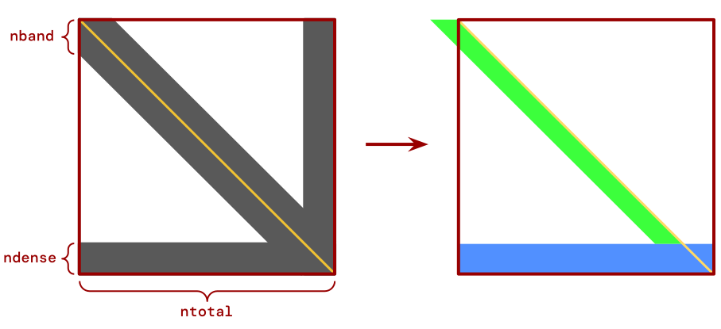

Functions#
Tip
Clicking on a function name below will take you to the source implementation in the GitHub repository.
The main header mujoco.h exposes a large number of functions. However the functions that most users are likely to need are a small fraction.
API function can be classified as:
- Main entry points
Parse and compile an mjModel from XML files and assets.
Main simulation entry points, including mj_step.
- Support functions
Pipeline components, called from mj_step, mj_forward and mj_inverse.
Sub components of the simulation pipeline.
Printing of various quantities.
Virtual file system, used to load assets from memory.
Asset cache, used to speed up model compilation.
Resources, interfacing with resource providers to load assets.
Initialization of data structures.
Miscellaneous functions.
- Visualization, Rendering, UI
Abstract interaction: mouse control of cameras and perturbations.
- Math
Aliases for C standard math functions.
Parse and compile#
The key function here is mj_loadXML. It invokes the built-in parser and compiler, and either returns a pointer to a valid mjModel, or NULL - in which case the user should check the error information in the user-provided string. The model and all files referenced in it can be loaded from disk or from a VFS when provided.
mj_loadXML#
mjModel* mj_loadXML(const char* filename, const mjVFS* vfs, char* error, int error_sz);
Parse XML file in MJCF or URDF format, compile it; return low-level model.
If vfs is not NULL, look up files in vfs before reading from disk.
If error is not NULL, it must have size error_sz.
Nullable: vfs, error
mj_parseXML#
mjSpec* mj_parseXML(const char* filename, const mjVFS* vfs, char* error, int error_sz);
Parse spec from XML file.
Nullable: vfs, error
mj_parseXMLString#
mjSpec* mj_parseXMLString(const char* xml, const mjVFS* vfs, char* error, int error_sz);
Parse spec from XML string.
Nullable: vfs, error
mj_parse#
mjSpec* mj_parse(const char* filename, const char* content_type,
const mjVFS* vfs, char* error, int error_sz);
Parse spec from a file.
Nullable: vfs, error
mj_encode#
int mj_encode(const mjSpec* s, const mjModel* m, const char* filename,
const char* content_type, const mjVFS* vfs, char* error,
int error_sz);
Encode spec/model to a file using a registered encoder.
Returns the number of bytes written on success, -1 on failure.
Nullable: m, vfs, error
mj_compile#
mjModel* mj_compile(mjSpec* s, const mjVFS* vfs);
Compile mjSpec to mjModel. A spec can be edited and compiled multiple times, returning a new
mjModel instance that takes the edits into account.
If compilation fails, mj_compile returns NULL; the error can be read with mjs_getError.
mj_copyBack#
int mj_copyBack(mjSpec* s, const mjModel* m);
Copy real-valued arrays from model to spec; return 1 on success.
mj_recompile#
int mj_recompile(mjSpec* s, const mjVFS* vfs, mjModel* m, mjData* d);
Recompile spec to model, preserving the state. Like mj_compile, this function compiles an mjSpec to an mjModel, with two differences. First, rather than returning an entirely new model, it will reallocate existing mjModel and mjData instances in-place. Second, it will preserve the integration state, as given in the provided mjData instance, while accounting for newly added or removed degrees of freedom. This allows the user to continue simulation with the same model and data struct pointers while editing the model programmatically.
mj_recompile returns 0 if compilation succeed. In the case of failure, the given mjModel and mjData instances will be deleted; as in mj_compile, the compilation error can be read with mjs_getError.
mj_saveLastXML#
int mj_saveLastXML(const char* filename, const mjModel* m, char* error, int error_sz);
Update XML data structures with info from low-level model created with mj_loadXML, save as MJCF. If error is not NULL, it must have size error_sz.
Note that this function only saves models that have been loaded with mj_loadXML, the legacy loading mechanism. See the model editing chapter to understand the difference between the old and new model loading and saving mechanisms.
mj_freeLastXML#
void mj_freeLastXML(void);
Free last XML model if loaded. Called internally at each load.
mj_saveXMLString#
int mj_saveXMLString(const mjSpec* s, char* xml, int xml_sz, char* error, int error_sz);
Save spec to XML string, return 0 on success, -1 on failure. If the length of the output buffer is too small, returns the required size. XML saving automatically compiles the spec before saving.
mj_saveXML#
int mj_saveXML(const mjSpec* s, const char* filename, char* error, int error_sz);
Save spec to XML file, return 0 on success, -1 otherwise. XML saving requires that the spec first be compiled.
mju_getXMLDependencies#
void mju_getXMLDependencies(const char* filename, mjStringVec* dependencies);
Given MJCF filename, fills dependencies with a list of all other asset files it depends on.
The search is recursive, and the list includes the filename itself.
Main simulation#
These are the main entry points to the simulator. Most users will only need to call mj_step, which computes
everything and advanced the simulation state by one time step. Controls and applied forces must either be set in advance
(in mjData.{ctrl, qfrc_applied, xfrc_applied}), or a control callback mjcb_control must be installed which
will be called just before the controls and applied forces are needed. Alternatively, one can use mj_step1 and
mj_step2 which break down the simulation pipeline into computations that are executed before and after the
controls are needed; in this way one can set controls that depend on the results from mj_step1. Keep in mind
though that the RK4 solver does not work with mj_step1/2. See Simulation pipeline for a more detailed description.
mj_forward performs the same computations as mj_step but without the integration. It is useful after loading or resetting a model (to put the entire mjData in a valid state), and also for out-of-order computations that involve sampling or finite-difference approximations.
mj_inverse runs the inverse dynamics, and writes its output in mjData.qfrc_inverse. Note that mjData.qacc
must be set before calling this function. Given the state (qpos, qvel, act), mj_forward maps from force to acceleration,
while mj_inverse maps from acceleration to force. Mathematically these functions are inverse of each other, but
numerically this may not always be the case because the forward dynamics rely on a constraint optimization algorithm
which is usually terminated early. The difference between the results of forward and inverse dynamics can be computed
with the function mj_compareFwdInv, which can be thought of as another solver accuracy check (as well as a
general sanity check).
The skip version of mj_forward and mj_inverse are useful for example when qpos was unchanged but qvel was changed (usually in the context of finite differencing). Then there is no point repeating the computations that only depend on qpos. Calling the dynamics with skipstage = mjSTAGE_POS will achieve these savings.
mj_step#
void mj_step(const mjModel* m, mjData* d);
Advance simulation, use control callback to obtain external force and control.
mj_step1#
void mj_step1(const mjModel* m, mjData* d);
Advance simulation in two steps: before external force and control is set by user.
mj_step2#
void mj_step2(const mjModel* m, mjData* d);
Advance simulation in two steps: after external force and control is set by user.
mj_forward#
void mj_forward(const mjModel* m, mjData* d);
Forward dynamics: same as mj_step but do not integrate in time.
mj_inverse#
void mj_inverse(const mjModel* m, mjData* d);
Inverse dynamics: qacc must be set before calling.
mj_forwardSkip#
void mj_forwardSkip(const mjModel* m, mjData* d, int skipstage, int skipsensor);
Forward dynamics with skip; skipstage is mjtStage.
mj_inverseSkip#
void mj_inverseSkip(const mjModel* m, mjData* d, int skipstage, int skipsensor);
Inverse dynamics with skip; skipstage is mjtStage.
Support#
These are support functions that need access to mjModel and mjData, unlike the utility functions which do not need such access. Support functions are called within the simulator but some of them can also be useful for custom computations, and are documented in more detail below.
mj_stateSize#
int mj_stateSize(const mjModel* m, int sig);
Returns the number of mjtNums required for a given state signature. The bits of the integer sig
correspond to element fields of mjtState.
mj_getState#
void mj_getState(const mjModel* m, const mjData* d, mjtNum* state, int sig);
Copy concatenated state components specified by sig from d into state. The bits of the integer
sig correspond to element fields of mjtState. Fails with mju_error if sig is invalid.
mj_extractState#
void mj_extractState(const mjModel* m, const mjtNum* src, int srcsig,
mjtNum* dst, int dstsig);
Extract into dst the subset of components specified by dstsig from a state src previously obtained via
mj_getState with components specified by srcsig. Fails with mju_error if the bits set in dstsig
is not a subset of the bits set in srcsig.
mj_setState#
void mj_setState(const mjModel* m, mjData* d, const mjtNum* state, int sig);
Copy concatenated state components specified by sig from state into d. The bits of the integer
sig correspond to element fields of mjtState. Fails with mju_error if sig is invalid.
mj_copyState#
void mj_copyState(const mjModel* m, const mjData* src, mjData* dst, int sig);
Copy state from src to dst.
mj_readCtrl#
mjtNum mj_readCtrl(const mjModel* m, const mjData* d, int id, mjtNum time, int interp);
Read the control value for an actuator at a given time, taking delays into account. If no history buffer exists, return
mjData.ctrl[id]. If a history buffer exists (nsample > 0), read from the delay
buffer at time - actuator_delay[id] using the requested interpolation order:
interp = 0: Zero-order hold (piecewise constant)interp = 1: Piecewise Linearinterp = 2: Cubic Spline (Catmull-Rom)interp = -1: Use the actuator’s interp value.
Constant extrapolation is used outside of buffer bounds.
Note that the subtraction of the delay changes the semantic of the time argument from “time at which values were
pushed into the delay buffer” to “time at which values come out of the delay buffer”. See Delays for
details.
mj_readSensor#
const mjtNum* mj_readSensor(const mjModel* m, const mjData* d, int id, mjtNum time,
mjtNum* result, int interp);
Read a sensor value at a given time, taking delays into account. If no history buffer exists, return a pointer to the
sensor’s slice of mjData.sensordata. If a history buffer exists (nsample > 0), read from the
history buffer at time - sensor_delay[id]. Note that the subtraction of the delay changes the semantic of the
time argument from “time at which values were pushed into the delay buffer” to “time at which values come out of the
delay buffer”. See Delays for details.
Return value semantics:
If no history buffer exists (nsample = 0), returns a pointer to the sensor’s slice of
mjData.sensordata.If a history buffer exists (nsample > 0) and the requested time matches a stored sample (always true for
interp = 0), returns a pointer to the data in the history buffer.If interpolation is required (
interp = 1 or 2), returnsNULLand writes the interpolated result toresult(must be of sizedim).
Interpolation:
interp = 0: Zero-order hold (piecewise constant)interp = 1: Piecewise Linearinterp = 2: Cubic Spline (Catmull-Rom)interp = -1: Use the value in interp
Constant extrapolation is used outside of buffer bounds.
Usage:
// read sensor 0 of data size `dim` at time t
mjtNum result[dim];
const mjtNum* ptr = mj_readSensor(m, d, 0, t, result, /* interp = */ 1);
const mjtNum* data = ptr ? ptr : result;
mj_initCtrlHistory#
void mj_initCtrlHistory(const mjModel* m, mjData* d, int id,
const mjtNum* times, const mjtNum* values);
Initialize the history buffer for an actuator with custom values. The times array specifies the timestamps for each
sample (must be length nsample), and values specifies the control values. If
times is NULL, the existing timestamps in the buffer are used, and only the values are updated.
See Delays for details.
mj_initSensorHistory#
void mj_initSensorHistory(const mjModel* m, mjData* d, int id,
const mjtNum* times, const mjtNum* values, mjtNum phase);
Initialize the history buffer for a sensor with custom values. The times array specifies the timestamps for each
sample (must be length nsample), and values specifies the sensor values (must be of size
nsample * dim). If times is NULL, the existing timestamps in the buffer are used.
The phase argument sets the user slot, which stores the last computation time for interval sensors.
See Delays for details.
mj_setKeyframe#
void mj_setKeyframe(mjModel* m, const mjData* d, int k);
Copy current state to the k-th model keyframe.
mj_addContact#
int mj_addContact(const mjModel* m, mjData* d, const mjContact* con);
Add contact to d->contact list; return 0 if success; 1 if buffer full.
mj_isPyramidal#
int mj_isPyramidal(const mjModel* m);
Determine type of friction cone.
mj_isSparse#
int mj_isSparse(const mjModel* m);
Determine type of constraint Jacobian.
mj_isDual#
int mj_isDual(const mjModel* m);
Determine type of solver (PGS is dual, CG and Newton are primal).
mj_mulJacVec#
void mj_mulJacVec(const mjModel* m, const mjData* d, mjtNum* res, const mjtNum* vec);
This function multiplies the constraint Jacobian mjData.efc_J by a vector. Note that the Jacobian can be either dense or sparse; the function is aware of this setting. Multiplication by J maps velocities from joint space to constraint space.
mj_mulJacTVec#
void mj_mulJacTVec(const mjModel* m, const mjData* d, mjtNum* res, const mjtNum* vec);
Same as mj_mulJacVec but multiplies by the transpose of the Jacobian. This maps forces from constraint space to joint space.
mj_jac#
void mj_jac(const mjModel* m, const mjData* d, mjtNum* jacp, mjtNum* jacr,
const mjtNum point[3], int body);
This function computes an end-effector kinematic Jacobian, describing the local linear relationship between the
degrees-of-freedom and a given point. Given a body specified by its integer id (body) and a 3D point in the world
frame (point) treated as attached to the body, the Jacobian has both translational (jacp) and rotational
(jacr) components. Passing NULL for either pointer will skip that part of the computation. Each component is a
3-by-nv matrix. Each row of this matrix is the gradient of the corresponding coordinate of the specified point with
respect to the degrees-of-freedom. The frame with respect to which the Jacobian is computed is centered at the body
center-of-mass but aligned with the world frame. The minimal pipeline stages required for Jacobian
computations to be consistent with the current generalized positions mjData.qpos are mj_kinematics followed
by mj_comPos.
Nullable: jacp, jacr
mj_jacBody#
void mj_jacBody(const mjModel* m, const mjData* d, mjtNum* jacp, mjtNum* jacr, int body);
This and the remaining variants of the Jacobian function call mj_jac internally, with the center of the body, geom or site. They are just shortcuts; the same can be achieved by calling mj_jac directly.
Nullable: jacp, jacr
mj_jacBodyCom#
void mj_jacBodyCom(const mjModel* m, const mjData* d, mjtNum* jacp, mjtNum* jacr, int body);
Compute body center-of-mass end-effector Jacobian.
Nullable: jacp, jacr
mj_jacSubtreeCom#
void mj_jacSubtreeCom(const mjModel* m, mjData* d, mjtNum* jacp, int body);
Compute subtree center-of-mass end-effector Jacobian.
mj_jacGeom#
void mj_jacGeom(const mjModel* m, const mjData* d, mjtNum* jacp, mjtNum* jacr, int geom);
Compute geom end-effector Jacobian.
Nullable: jacp, jacr
mj_jacSite#
void mj_jacSite(const mjModel* m, const mjData* d, mjtNum* jacp, mjtNum* jacr, int site);
Compute site end-effector Jacobian.
Nullable: jacp, jacr
mj_jacPointAxis#
void mj_jacPointAxis(const mjModel* m, mjData* d, mjtNum* jacPoint, mjtNum* jacAxis,
const mjtNum point[3], const mjtNum axis[3], int body);
Compute translation end-effector Jacobian of point, and rotation Jacobian of axis.
Nullable: jacPoint, jacAxis
mj_jacDot#
void mj_jacDot(const mjModel* m, const mjData* d, mjtNum* jacp, mjtNum* jacr,
const mjtNum point[3], int body);
This function computes the time-derivative of an end-effector kinematic Jacobian computed by mj_jac.
The minimal pipeline stages required for computation to be
consistent with the current generalized positions and velocities mjData.{qpos, qvel} are
mj_kinematics, mj_comPos, mj_comVel (in that order).
Nullable: jacp, jacr
mj_angmomMat#
void mj_angmomMat(const mjModel* m, mjData* d, mjtNum* mat, int body);
This function computes the 3 x nv angular momentum matrix \(H(q)\), providing the linear mapping from
generalized velocities to subtree angular momentum. More precisely if \(h\) is the subtree angular momentum of
body index body in mjData.subtree_angmom (reported by the subtreeangmom sensor)
and \(\dot q\) is the generalized velocity mjData.qvel, then \(h = H \dot q\).
mj_name2id#
int mj_name2id(const mjModel* m, int type, const char* name);
Get id of object with the specified mjtObj type and name, returns -1 if id not found.
mj_id2name#
const char* mj_id2name(const mjModel* m, int type, int id);
Get name of object with the specified mjtObj type and id, returns NULL if name not found.
mj_fullM#
void mj_fullM(const mjModel* m, mjtNum* dst, const mjtNum* M);
Convert sparse inertia matrix M into full (i.e. dense) matrix.
dst must be of size nv x nv, M must be of the same structure as mjData.qM.
The mjData members qM and M represent the same matrix in different formats; the former is unique to
MuJoCo, the latter is standard Compressed Sparse Row (lower triangle only). The \(L^T D L\) factor of the inertia
matrix mjData.qLD uses the same CSR format as mjData.M. See
engine_support_test for
pedagogical examples.
mj_mulM#
void mj_mulM(const mjModel* m, const mjData* d, mjtNum* res, const mjtNum* vec);
This function multiplies the joint-space inertia matrix stored in mjData.M by a vector.
mj_mulM2#
void mj_mulM2(const mjModel* m, const mjData* d, mjtNum* res, const mjtNum* vec);
Multiply vector by (inertia matrix)^(1/2).
mj_addM#
void mj_addM(const mjModel* m, mjData* d, mjtNum* dst, int* rownnz, int* rowadr, int* colind);
Add inertia matrix to destination matrix (lower triangle only).
Destination can be sparse or dense when all int* are NULL.
Nullable: rownnz, rowadr, colind
mj_applyFT#
void mj_applyFT(const mjModel* m, mjData* d, const mjtNum force[3], const mjtNum torque[3],
const mjtNum point[3], int body, mjtNum* qfrc_target);
This function can be used to apply a Cartesian force and torque to a point on a body, and add the result to the vector mjData.qfrc_applied of all applied forces. Note that the function requires a pointer to this vector, because sometimes we want to add the result to a different vector.
mj_objectVelocity#
void mj_objectVelocity(const mjModel* m, const mjData* d,
int objtype, int objid, mjtNum res[6], int flg_local);
Compute object 6D velocity (rot:lin) in object-centered frame, world/local orientation.
mj_objectAcceleration#
void mj_objectAcceleration(const mjModel* m, const mjData* d,
int objtype, int objid, mjtNum res[6], int flg_local);
Compute object 6D acceleration (rot:lin) in object-centered frame, world/local orientation. If acceleration or force sensors are not present in the model, mj_rnePostConstraint must be manually called in order to calculate mjData.cacc – the total body acceleration, including contributions from the constraint solver.
mj_geomDistance#
mjtNum mj_geomDistance(const mjModel* m, mjData* d, int geom1, int geom2, mjtNum distmax,
mjtNum fromto[6]);
Returns the smallest signed distance between two geoms and optionally the segment from geom1 to geom2.
Returned distances are bounded from above by distmax.
If no collision of distance smaller than distmax is
found, the function will return distmax and fromto, if given, will be set to (0, 0, 0, 0, 0, 0).
Nullable: fromto
different (correct) behavior under nativeccd
As explained in Collision Detection, distances are inaccurate when using the legacy CCD pipeline, and its use is discouraged.
mj_contactForce#
void mj_contactForce(const mjModel* m, const mjData* d, int id, mjtNum result[6]);
Extract 6D force:torque given contact id, in the contact frame.
mj_differentiatePos#
void mj_differentiatePos(const mjModel* m, mjtNum* qvel, mjtNum dt,
const mjtNum* qpos1, const mjtNum* qpos2);
This function subtracts two vectors in the format of qpos (and divides the result by dt), while respecting the properties of quaternions. Recall that unit quaternions represent spatial orientations. They are points on the unit sphere in 4D. The tangent to that sphere is a 3D plane of rotational velocities. Thus when we subtract two quaternions in the right way, the result is a 3D vector and not a 4D vector. Thus the output qvel has dimensionality nv while the inputs have dimensionality nq.
mj_integratePos#
void mj_integratePos(const mjModel* m, mjtNum* qpos, const mjtNum* qvel, mjtNum dt);
This is the opposite of mj_differentiatePos. It adds a vector in the format of qvel (scaled by dt) to a vector in the format of qpos.
mj_normalizeQuat#
void mj_normalizeQuat(const mjModel* m, mjtNum* qpos);
Normalize all quaternions in qpos-type vector.
mj_local2Global#
void mj_local2Global(mjData* d, mjtNum xpos[3], mjtNum xmat[9], const mjtNum pos[3],
const mjtNum quat[4], int body, mjtByte sameframe);
Map from body local to global Cartesian coordinates, sameframe takes values from mjtSameFrame.
mj_getTotalmass#
mjtNum mj_getTotalmass(const mjModel* m);
Sum all body masses.
mj_setTotalmass#
void mj_setTotalmass(mjModel* m, mjtNum newmass);
Scale body masses and inertias to achieve specified total mass.
mj_getPluginConfig#
const char* mj_getPluginConfig(const mjModel* m, int plugin_id, const char* attrib);
Return a config attribute value of a plugin instance;
NULL: invalid plugin instance ID or attribute name
mj_loadPluginLibrary#
void mj_loadPluginLibrary(const char* path);
Load a dynamic library. The dynamic library is assumed to register one or more plugins.
mj_loadAllPluginLibraries#
void mj_loadAllPluginLibraries(const char* directory, mjfPluginLibraryLoadCallback callback);
Scan a directory and load all dynamic libraries. Dynamic libraries in the specified directory are assumed to register one or more plugins. Optionally, if a callback is specified, it is called for each dynamic library encountered that registers plugins.
mj_version#
int mj_version(void);
Return version number: 1.0.2 is encoded as 102.
mj_versionString#
const char* mj_versionString(void);
Return the current version of MuJoCo as a null-terminated string.
Components#
These are components of the simulation pipeline, called internally from mj_step, mj_forward and mj_inverse. It is unlikely that the user will need to call them.
mj_fwdKinematics#
void mj_fwdKinematics(const mjModel* m, mjData* d);
Run all kinematics-like computations (kinematics, comPos, camlight, flex, tendon).
mj_fwdPosition#
void mj_fwdPosition(const mjModel* m, mjData* d);
Run position-dependent computations.
mj_fwdVelocity#
void mj_fwdVelocity(const mjModel* m, mjData* d);
Run velocity-dependent computations.
mj_fwdActuation#
void mj_fwdActuation(const mjModel* m, mjData* d);
Compute actuator force qfrc_actuator.
mj_fwdAcceleration#
void mj_fwdAcceleration(const mjModel* m, mjData* d);
Add up all non-constraint forces, compute qacc_smooth.
mj_fwdConstraint#
void mj_fwdConstraint(const mjModel* m, mjData* d);
Run selected constraint solver.
mj_Euler#
void mj_Euler(const mjModel* m, mjData* d);
Euler integrator, semi-implicit in velocity.
mj_RungeKutta#
void mj_RungeKutta(const mjModel* m, mjData* d, int N);
Runge-Kutta explicit order-N integrator.
mj_implicit#
void mj_implicit(const mjModel* m, mjData* d);
Integrates the simulation state using an implicit-in-velocity integrator (either “implicit” or “implicitfast”, see Numerical Integration), and advances simulation time. See mjdata.h for fields computed by this function.
mj_invPosition#
void mj_invPosition(const mjModel* m, mjData* d);
Run position-dependent computations in inverse dynamics.
mj_invVelocity#
void mj_invVelocity(const mjModel* m, mjData* d);
Run velocity-dependent computations in inverse dynamics.
mj_invConstraint#
void mj_invConstraint(const mjModel* m, mjData* d);
Apply the analytical formula for inverse constraint dynamics.
mj_compareFwdInv#
void mj_compareFwdInv(const mjModel* m, mjData* d);
Compare forward and inverse dynamics, save results in fwdinv.
Sub components#
These are sub-components of the simulation pipeline, called internally from the components above.
mj_sensorPos#
void mj_sensorPos(const mjModel* m, mjData* d);
Evaluate position-dependent sensors.
mj_sensorVel#
void mj_sensorVel(const mjModel* m, mjData* d);
Evaluate velocity-dependent sensors.
mj_sensorAcc#
void mj_sensorAcc(const mjModel* m, mjData* d);
Evaluate acceleration and force-dependent sensors.
mj_energyPos#
void mj_energyPos(const mjModel* m, mjData* d);
Evaluate position-dependent energy (potential).
mj_energyVel#
void mj_energyVel(const mjModel* m, mjData* d);
Evaluate velocity-dependent energy (kinetic).
mj_checkPos#
void mj_checkPos(const mjModel* m, mjData* d);
Check qpos, reset if any element is too big or nan.
mj_checkVel#
void mj_checkVel(const mjModel* m, mjData* d);
Check qvel, reset if any element is too big or nan.
mj_checkAcc#
void mj_checkAcc(const mjModel* m, mjData* d);
Check qacc, reset if any element is too big or nan.
mj_kinematics#
void mj_kinematics(const mjModel* m, mjData* d);
Run forward kinematics.
mj_comPos#
void mj_comPos(const mjModel* m, mjData* d);
Map inertias and motion dofs to global frame centered at CoM.
mj_camlight#
void mj_camlight(const mjModel* m, mjData* d);
Compute camera and light positions and orientations.
mj_flex#
void mj_flex(const mjModel* m, mjData* d);
Compute flex-related quantities.
mj_tendon#
void mj_tendon(const mjModel* m, mjData* d);
Compute tendon lengths, velocities and moment arms.
mj_transmission#
void mj_transmission(const mjModel* m, mjData* d);
Compute actuator transmission lengths and moments.
mj_crb#
void mj_crb(const mjModel* m, mjData* d);
Run composite rigid body inertia algorithm (CRB).
mj_makeM#
void mj_makeM(const mjModel* m, mjData* d);
Compute the composite rigid body inertia with mj_crb, add terms due
to tendon armature. The joint-space inertia matrix is stored in both mjData.qM and
mjData.M. These arrays represent the same quantity using different layouts (parent-based and compressed sparse row,
respectively).
mj_factorM#
void mj_factorM(const mjModel* m, mjData* d);
Compute sparse \(L^T D L\) factorizaton of inertia matrix.
mj_solveM#
void mj_solveM(const mjModel* m, mjData* d, mjtNum* x, const mjtNum* y, int n);
Solve linear system \(M x = y\) using factorization: \(x = (L^T D L)^{-1} y\)
mj_solveM2#
void mj_solveM2(const mjModel* m, mjData* d, mjtNum* x, const mjtNum* y,
const mjtNum* sqrtInvD, int n);
Half of linear solve: \(x = \sqrt{D^{-1}} (L^T)^{-1} y\)
mj_comVel#
void mj_comVel(const mjModel* m, mjData* d);
Compute cvel, cdof_dot.
mj_passive#
void mj_passive(const mjModel* m, mjData* d);
Compute qfrc_passive from spring-dampers, gravity compensation and fluid forces.
mj_subtreeVel#
void mj_subtreeVel(const mjModel* m, mjData* d);
Sub-tree linear velocity and angular momentum: compute subtree_linvel, subtree_angmom.
This function is triggered automatically if the subtree velocity or
momentum sensors are present in the model.
It is also triggered for user sensors of stage “vel”.
mj_rne#
void mj_rne(const mjModel* m, mjData* d, int flg_acc, mjtNum* result);
Recursive Newton Euler: compute \(M(q) \ddot q + C(q,\dot q)\). flg_acc=0 removes the inertial term (i.e.
assumes \(\ddot q = 0\)).
mj_rnePostConstraint#
void mj_rnePostConstraint(const mjModel* m, mjData* d);
Recursive Newton Euler with final computed forces and accelerations.
Computes three body-level nv x 6 arrays, all defined in the subtreecom-based
c-frame and arranged in [rotation(3), translation(3)] order.
cacc: Body acceleration, required for mj_objectAcceleration.cfrc_int: Interaction force with the parent body.cfrc_ext: External force acting on the body.
This function is triggered automatically if the following sensors are present in the model: accelerometer, force, torque, framelinacc, frameangacc. It is also triggered for user sensors of stage “acc”.
The computed force arrays cfrc_int and cfrc_ext currently suffer from a know bug, they do not take into account
the effect of spatial tendons, see issue #832.
mj_maxContact#
int mj_maxContact(const mjModel* m, int g1, int g2, int has_margin);
Return the maximum number of contacts that can be generated between two geoms.
If has_margin is -1, then the margin is pulled from the model, otherwise if has_margin > 0 indicates that the geoms have a positive margin.
mj_collision#
void mj_collision(const mjModel* m, mjData* d);
Run collision detection.
mj_makeConstraint#
void mj_makeConstraint(const mjModel* m, mjData* d);
Construct constraints.
mj_island#
void mj_island(const mjModel* m, mjData* d);
Find constraint islands.
mj_projectConstraint#
void mj_projectConstraint(const mjModel* m, mjData* d);
Compute inverse constraint inertia efc_AR.
mj_referenceConstraint#
void mj_referenceConstraint(const mjModel* m, mjData* d);
Compute efc_vel, efc_aref.
mj_constraintUpdate#
void mj_constraintUpdate(const mjModel* m, mjData* d, const mjtNum* jar,
mjtNum cost[1], int flg_coneHessian);
Compute efc_state, efc_force, qfrc_constraint, and (optionally) cone Hessians.
If cost is not NULL, set *cost = s(jar) where jar = Jac*qacc - aref.
Nullable: cost
Ray casting#
Ray collisions, also known as ray casting, find the distance x of a ray’s intersection with a geom, where a ray is
a line emanating from the 3D point p in the direction v i.e., (p + x*v, x >= 0). All functions in this
family return the distance to the nearest geom surface, or -1 if there is no intersection. Note that if p is inside
a geom, the ray will intersect the surface from the inside which still counts as an intersection.
All ray collision functions rely on quantities computed by mj_kinematics (see mjData), so must be called after mj_kinematics, or functions that call it (e.g. mj_fwdPosition). The top level functions, which intersect with all geoms types, are mj_ray which casts a single ray, and mj_multiRay which casts multiple rays from a single point.
mj_ray#
mjtNum mj_ray(const mjModel* m, const mjData* d, const mjtNum pnt[3], const mjtNum vec[3],
const mjtByte* geomgroup, mjtBool flg_static, int bodyexclude,
int geomid[1], mjtNum normal[3]);
Intersect ray pnt+x*vec, x >= 0 with geoms.
Return distance
xto nearest surface, or -1 if no intersection.If
geomidis not NULL, write the id of the intersected geom or -1 if not intersection.If
normalis not NULL, write the surface normal at the intersection point. The normal always points out of the geometry, regardless of the ray’s direction (i.e., including rays hitting the surface from the inside).Exclude geoms in body with id
bodyexclude, use -1 to include all bodies.geomgroupis an array of length mjNGROUP, where 1 means the group should be included. Pass NULL to skip geom group exclusion.If
flg_staticis 0, static geoms will be excluded.
Nullable: geomgroup, geomid, normal
mj_multiRay#
void mj_multiRay(const mjModel* m, mjData* d, const mjtNum pnt[3], const mjtNum* vec,
const mjtByte* geomgroup, mjtBool flg_static, int bodyexclude,
int* geomid, mjtNum* dist, mjtNum* normal, int nray, mjtNum cutoff);
Intersect multiple rays emanating from a single point, compute normals if given.
Similar semantics to mj_ray, but vec, normal and dist are arrays.
Geoms further than cutoff are ignored.
Nullable: geomgroup, geomid, normal
mj_rayHfield#
mjtNum mj_rayHfield(const mjModel* m, const mjData* d, int geomid,
const mjtNum pnt[3], const mjtNum vec[3], mjtNum normal[3]);
Intersect ray with hfield; return nearest distance or -1 if no intersection.
Nullable: normal
mj_rayMesh#
mjtNum mj_rayMesh(const mjModel* m, const mjData* d, int geomid,
const mjtNum pnt[3], const mjtNum vec[3], mjtNum normal[3]);
Intersect ray with mesh; return nearest distance or -1 if no intersection.
Nullable: normal
mju_rayGeom#
mjtNum mju_rayGeom(const mjtNum pos[3], const mjtNum mat[9], const mjtNum size[3],
const mjtNum pnt[3], const mjtNum vec[3], int geomtype,
mjtNum normal[3]);
Intersect ray with pure geom; return nearest distance or -1 if no intersection.
Nullable: normal
mj_rayFlex#
mjtNum mj_rayFlex(const mjModel* m, const mjData* d, int flex_layer,
mjtBool flg_vert, mjtBool flg_edge, mjtBool flg_face,
mjtBool flg_skin, int flexid, const mjtNum pnt[3],
const mjtNum vec[3], int vertid[1], mjtNum normal[3]);
Intersect ray with flex; return nearest distance or -1 if no intersection, and also output nearest vertex id and surface normal.
Nullable: vertid, normal
mju_raySkin#
mjtNum mju_raySkin(int nface, int nvert, const int* face, const float* vert,
const mjtNum pnt[3], const mjtNum vec[3], int vertid[1]);
Intersect ray with skin; return nearest distance or -1 if no intersection, and also output nearest vertex id.
Nullable: vertid
Printing#
These functions can be used to print various quantities to the screen for debugging purposes.
mj_printFormattedModel#
void mj_printFormattedModel(const mjModel* m, const char* filename, const char* float_format);
Print mjModel to text file, specifying format. float_format must be a valid printf-style format string for a single float value.
mj_printModel#
void mj_printModel(const mjModel* m, const char* filename);
Print model to text file.
mj_printFormattedData#
void mj_printFormattedData(const mjModel* m, const mjData* d, const char* filename,
const char* float_format);
Print mjData to text file, specifying format. float_format must be a valid printf-style format string for a single float value.
mj_printData#
void mj_printData(const mjModel* m, const mjData* d, const char* filename);
Print data to text file.
mju_printMat#
void mju_printMat(const mjtNum* mat, int nr, int nc);
Print matrix to screen.
mju_printMatSparse#
void mju_printMatSparse(const mjtNum* mat, int nr,
const int* rownnz, const int* rowadr, const int* colind);
Print sparse matrix to screen.
mj_printSchema#
int mj_printSchema(const char* filename, char* buffer, int buffer_sz,
int flg_html, int flg_pad);
Print internal XML schema as plain text or HTML, with style-padding or .
mj_printScene#
void mj_printScene(const mjvScene* s, const char* filename);
Print scene to text file.
mj_printFormattedScene#
void mj_printFormattedScene(const mjvScene* s, const char* filename,
const char* float_format);
Print scene to text file, specifying format. float_format must be a valid printf-style format string for a single float value.
Virtual file system#
Virtual file system (VFS) enables the user to load all necessary files in memory, including MJB binary model files, XML files (MJCF, URDF and included files), STL meshes, PNGs for textures and height fields, and HF files in our custom height field format. Model and resource files in the VFS can also be constructed programmatically (say using a Python library that writes to memory). Once all desired files are in the VFS, the user can call mj_loadModel or mj_loadXML with a pointer to the VFS. When this pointer is not NULL, the loaders will first check the VFS for any files they are about to load, and only access the disk if the file is not found in the VFS.
The VFS must first be allocated using mj_defaultVFS and must be freed with mj_deleteVFS.
mj_defaultVFS#
void mj_defaultVFS(mjVFS* vfs);
Initialize an empty VFS, mj_deleteVFS must be called to deallocate the VFS.
mj_mountVFS#
int mj_mountVFS(mjVFS* vfs, const char* filepath, const mjpResourceProvider* provider);
Mount a ResourceProvider to handle file operations under the given path; return 0: success, 2: repeated name, -1: invalid resource provider.
mj_unmountVFS#
int mj_unmountVFS(mjVFS* vfs, const char* filename);
Unmount a previously mounted ResourceProvider; return 0: success, -1: not found in VFS.
mj_addFileVFS#
int mj_addFileVFS(mjVFS* vfs, const char* directory, const char* filename);
Add file to VFS. The directory argument is optional and can be NULL or empty. Returns 0 on success, 2 on name collision, or -1 when an internal error occurs.
Nullable: directory
mj_addBufferVFS#
int mj_addBufferVFS(mjVFS* vfs, const char* name, const void* buffer, int nbuffer);
Add file to VFS from buffer; return 0: success, 2: repeated name, -1: failed to load.
mj_deleteFileVFS#
int mj_deleteFileVFS(mjVFS* vfs, const char* filename);
Delete file from VFS; return 0: success, -1: not found in VFS.
mj_containsBufferVFS#
int mj_containsBufferVFS(mjVFS* vfs, const char* name);
Check if buffer exists in VFS; return 1: exists, 0: not found.
mj_containsFileVFS#
int mj_containsFileVFS(mjVFS* vfs, const char* directory, const char* filename);
Check if file exists in VFS; return 1: exists, 0: not found.
mj_deleteVFS#
void mj_deleteVFS(mjVFS* vfs);
Delete all files from VFS and deallocates VFS internal memory.
Asset cache#
The asset cache is a mechanism for caching assets (e.g. textures, meshes, etc.) to avoid repeated slow recompilation. The following methods provide way to control the capacity of the cache or to disable it altogether.
mj_getCacheSize#
size_t mj_getCacheSize(const mjCache* cache);
Get the current size of the asset cache in bytes.
mj_getCacheCapacity#
size_t mj_getCacheCapacity(const mjCache* cache);
Get the capacity of the asset cache in bytes.
mj_setCacheCapacity#
size_t mj_setCacheCapacity(mjCache* cache, size_t size);
Set the capacity of the asset cache in bytes (0 to disable); return the new capacity.
mj_getCache#
mjCache* mj_getCache(void);
Get the internal asset cache used by the compiler.
mj_clearCache#
void mj_clearCache(mjCache* cache);
Clear the asset cache.
Resources#
Resources are the interface between resource providers and MuJoCo model compilation code. These functions provide the means to query the resource provider and obtain resources. .. _mju_openResource:
mju_openResource#
mjResource* mju_openResource(const char* dir, const char* name,
const mjVFS* vfs, char* error, size_t nerror);
Open a resource; if the name doesn’t have a prefix matching a registered resource provider, then the OS filesystem is used.
Nullable: dir, vfs, error
mju_closeResource#
void mju_closeResource(mjResource* resource);
Close a resource; no-op if resource is NULL.
mju_readResource#
int mju_readResource(mjResource* resource, const void** buffer);
Set buffer to bytes read from the resource and return number of bytes in buffer; return negative value if error.
mju_getResourceDir#
void mju_getResourceDir(mjResource* resource, const char** dir, int* ndir);
For a resource with a name partitioned as {dir}{filename}, get the dir and ndir pointers.
mju_isModifiedResource#
int mju_isModifiedResource(const mjResource* resource, const char* timestamp);
Compare resource timestamp to provided timestamp.
Return 0 if timestamps match, >0 if resource is newer, <0 if resource is older.
mju_decodeResource#
mjSpec* mju_decodeResource(mjResource* resource, const char* content_type,
const mjVFS* vfs);
Find the decoder for a resource and return the decoded spec.
The caller takes ownership of the spec and is responsible for cleaning it up.
Nullable: vfs
Initialization#
This section contains functions that load/initialize the model or other data structures. Their use is well illustrated in the code samples.
mj_defaultLROpt#
void mj_defaultLROpt(mjLROpt* opt);
Set default options for length range computation.
mj_defaultSolRefImp#
void mj_defaultSolRefImp(mjtNum* solref, mjtNum* solimp);
Set solver parameters to default values.
Nullable: solref, solimp
mj_defaultOption#
void mj_defaultOption(mjOption* opt);
Set physics options to default values.
mj_defaultVisual#
void mj_defaultVisual(mjVisual* vis);
Set visual options to default values.
mj_copyModel#
mjModel* mj_copyModel(mjModel* dest, const mjModel* src);
Copy mjModel, allocate new if dest is NULL.
Nullable: dest
mj_saveModel#
void mj_saveModel(const mjModel* m, const char* filename, void* buffer, int buffer_sz);
Save model to binary MJB file or memory buffer; buffer has precedence when given.
Nullable: filename, buffer
mj_loadModel#
mjModel* mj_loadModel(const char* filename, const mjVFS* vfs);
Load model from binary MJB file.
If vfs is not NULL, look up file in vfs before reading from disk.
Nullable: vfs
mj_loadModelBuffer#
mjModel* mj_loadModelBuffer(const void* buffer, int buffer_sz);
Load model from memory buffer.
mj_deleteModel#
void mj_deleteModel(mjModel* m);
Free memory allocation in model.
mj_sizeModel#
mjtSize mj_sizeModel(const mjModel* m);
Return size of buffer needed to hold model.
mj_makeData#
mjData* mj_makeData(const mjModel* m);
Allocate mjData corresponding to given model.
If the model buffer is unallocated the initial configuration will not be set.
mj_copyData#
mjData* mj_copyData(mjData* dest, const mjModel* m, const mjData* src);
Copy mjData. m is only required to contain the size fields from MJMODEL_INTS.
mjv_copyData#
mjData* mjv_copyData(mjData* dest, const mjModel* m, const mjData* src);
Copy mjData, skip large arrays not required for visualization.
mj_resetData#
void mj_resetData(const mjModel* m, mjData* d);
Reset data to defaults.
mj_resetDataDebug#
void mj_resetDataDebug(const mjModel* m, mjData* d, unsigned char debug_value);
Reset data to defaults, fill everything else with debug_value.
mj_resetDataKeyframe#
void mj_resetDataKeyframe(const mjModel* m, mjData* d, int key);
Reset data. If 0 <= key < nkey, set fields from specified keyframe.
mj_markStack#
void mj_markStack(mjData* d);
Mark a new frame on the mjData stack.
mj_freeStack#
void mj_freeStack(mjData* d);
Free the current mjData stack frame. All pointers returned by mj_stackAlloc since the last call to mj_markStack must no longer be used afterwards.
mj_stackAllocByte#
void* mj_stackAllocByte(mjData* d, size_t bytes, size_t alignment);
Allocate a number of bytes on mjData stack at a specific alignment.
Call mju_error on stack overflow.
mj_stackAllocNum#
mjtNum* mj_stackAllocNum(mjData* d, size_t size);
Allocate array of mjtNums on mjData stack. Call mju_error on stack overflow.
mj_stackAllocInt#
int* mj_stackAllocInt(mjData* d, size_t size);
Allocate array of ints on mjData stack. Call mju_error on stack overflow.
mj_deleteData#
void mj_deleteData(mjData* d);
Free memory allocation in mjData.
mj_resetCallbacks#
void mj_resetCallbacks(void);
Reset all callbacks to NULL pointers (NULL is the default).
mj_setConst#
void mj_setConst(mjModel* m, mjData* d);
Set constant fields of mjModel, corresponding to qpos0 configuration.
mj_setLengthRange#
int mj_setLengthRange(mjModel* m, mjData* d, int index,
const mjLROpt* opt, char* error, int error_sz);
Set actuator_lengthrange for specified actuator; return 1 if ok, 0 if error.
Nullable: error
mj_makeSpec#
mjSpec* mj_makeSpec(void);
Create empty spec.
mj_copySpec#
mjSpec* mj_copySpec(const mjSpec* s);
Copy spec.
mj_deleteSpec#
void mj_deleteSpec(mjSpec* s);
Free memory allocation in mjSpec.
mjs_activatePlugin#
int mjs_activatePlugin(mjSpec* s, const char* name);
Activate plugin; return 0 on success.
mjs_setDeepCopy#
int mjs_setDeepCopy(mjSpec* s, int deepcopy);
Turn deep copy on or off attach; return 0 on success.
Error and memory#
mju_error#
void mju_error(const char* msg, ...) mjPRINTFLIKE(1, 2);
Main error function; does not return to caller.
mju_error_i#
void mju_error_i(const char* msg, int i);
Deprecated: use mju_error.
mju_error_s#
void mju_error_s(const char* msg, const char* text);
Deprecated: use mju_error.
mju_warning#
void mju_warning(const char* msg, ...) mjPRINTFLIKE(1, 2);
Main warning function; returns to caller.
mju_warning_i#
void mju_warning_i(const char* msg, int i);
Deprecated: use mju_warning.
mju_warning_s#
void mju_warning_s(const char* msg, const char* text);
Deprecated: use mju_warning.
mju_clearHandlers#
void mju_clearHandlers(void);
Clear user error and memory handlers.
mju_malloc#
void* mju_malloc(size_t size);
Allocate memory; byte-align on 64; pad size to multiple of 64.
mju_free#
void mju_free(void* ptr);
Free memory, using free() by default.
mj_warning#
void mj_warning(mjData* d, int warning, int info);
High-level warning function: count warnings in mjData, print only the first.
mju_writeLog#
void mju_writeLog(const char* type, const char* msg);
Write [datetime, type: message] to MUJOCO_LOG.TXT.
mjs_getError#
const char* mjs_getError(mjSpec* s);
Get compiler error message from spec.
mjs_getTimer#
const double* mjs_getTimer(mjSpec* s);
Get compiler timing diagnostics from spec, returns pointer to array of size mjNCTIMER.
mjs_isWarning#
int mjs_isWarning(mjSpec* s);
Return 1 if compiler error is a warning.
Miscellaneous#
mju_muscleGain#
mjtNum mju_muscleGain(mjtNum len, mjtNum vel, const mjtNum lengthrange[2],
mjtNum acc0, const mjtNum prm[9]);
Muscle active force, prm = (range[2], force, scale, lmin, lmax, vmax, fpmax, fvmax).
mju_muscleBias#
mjtNum mju_muscleBias(mjtNum len, const mjtNum lengthrange[2],
mjtNum acc0, const mjtNum prm[9]);
Muscle passive force, prm = (range[2], force, scale, lmin, lmax, vmax, fpmax, fvmax).
mju_muscleDynamics#
mjtNum mju_muscleDynamics(mjtNum ctrl, mjtNum act, const mjtNum prm[3]);
Muscle activation dynamics, prm = (tau_act, tau_deact, smoothing_width).
mju_encodePyramid#
void mju_encodePyramid(mjtNum* pyramid, const mjtNum* force, const mjtNum* mu, int dim);
Convert contact force to pyramid representation.
mju_decodePyramid#
void mju_decodePyramid(mjtNum* force, const mjtNum* pyramid, const mjtNum* mu, int dim);
Convert pyramid representation to contact force.
mju_springDamper#
mjtNum mju_springDamper(mjtNum pos0, mjtNum vel0, mjtNum Kp, mjtNum Kv, mjtNum dt);
Integrate spring-damper analytically; return pos(dt).
mju_min#
mjtNum mju_min(mjtNum a, mjtNum b);
Return min(a,b) with single evaluation of a and b.
mju_max#
mjtNum mju_max(mjtNum a, mjtNum b);
Return max(a,b) with single evaluation of a and b.
mju_clip#
mjtNum mju_clip(mjtNum x, mjtNum min, mjtNum max);
Clip x to the range [min, max].
mju_sign#
mjtNum mju_sign(mjtNum x);
Return sign of x: +1, -1 or 0.
mju_round#
int mju_round(mjtNum x);
Round x to nearest integer.
mju_type2Str#
const char* mju_type2Str(int type);
Convert type id (mjtObj) to type name.
mju_str2Type#
int mju_str2Type(const char* str);
Convert type name to type id (mjtObj).
mju_writeNumBytes#
const char* mju_writeNumBytes(size_t nbytes);
Return human readable number of bytes using standard letter suffix.
mju_warningText#
const char* mju_warningText(int warning, size_t info);
Construct a warning message given the warning type and info.
mju_isBad#
int mju_isBad(mjtNum x);
Return 1 if nan or abs(x)>mjMAXVAL, 0 otherwise. Used by check functions.
mju_isZero#
int mju_isZero(const mjtNum* vec, int n);
Return 1 if all elements are 0.
mju_standardNormal#
mjtNum mju_standardNormal(mjtNum* num2);
Standard normal random number generator (optional second number).
mju_f2n#
void mju_f2n(mjtNum* res, const float* vec, int n);
Convert from float to mjtNum.
mju_n2f#
void mju_n2f(float* res, const mjtNum* vec, int n);
Convert from mjtNum to float.
mju_d2n#
void mju_d2n(mjtNum* res, const double* vec, int n);
Convert from double to mjtNum.
mju_n2d#
void mju_n2d(double* res, const mjtNum* vec, int n);
Convert from mjtNum to double.
mju_insertionSort#
void mju_insertionSort(mjtNum* list, int n);
Insertion sort, resulting list is in increasing order.
mju_insertionSortInt#
void mju_insertionSortInt(int* list, int n);
Integer insertion sort, resulting list is in increasing order.
mju_Halton#
mjtNum mju_Halton(int index, int base);
Generate Halton sequence.
mju_strncpy#
char* mju_strncpy(char *dst, const char *src, int n);
Call strncpy, then set dst[n-1] = 0.
mju_sigmoid#
mjtNum mju_sigmoid(mjtNum x);
Twice continuously differentiable sigmoid function using a quintic polynomial:
Interaction#
These functions implement abstract mouse interactions, allowing control over cameras and perturbations. Their use is well illustrated in simulate.
mjv_defaultCamera#
void mjv_defaultCamera(mjvCamera* cam);
Set default camera.
mjv_defaultFreeCamera#
void mjv_defaultFreeCamera(const mjModel* m, mjvCamera* cam);
Set default free camera.
mjv_defaultPerturb#
void mjv_defaultPerturb(mjvPerturb* pert);
Set default perturbation.
mjv_room2model#
void mjv_room2model(mjtNum modelpos[3], mjtNum modelquat[4], const mjtNum roompos[3],
const mjtNum roomquat[4], const mjvScene* scn);
Transform pose from room to model space.
mjv_model2room#
void mjv_model2room(mjtNum roompos[3], mjtNum roomquat[4], const mjtNum modelpos[3],
const mjtNum modelquat[4], const mjvScene* scn);
Transform pose from model to room space.
mjv_cameraInModel#
void mjv_cameraInModel(mjtNum headpos[3], mjtNum forward[3], mjtNum up[3],
const mjvScene* scn);
Get camera info in model space; average left and right OpenGL cameras.
mjv_cameraInRoom#
void mjv_cameraInRoom(mjtNum headpos[3], mjtNum forward[3], mjtNum up[3],
const mjvScene* scn);
Get camera info in room space; average left and right OpenGL cameras.
mjv_frustumHeight#
mjtNum mjv_frustumHeight(const mjvScene* scn);
Get frustum height at unit distance from camera; average left and right OpenGL cameras.
mjv_alignToCamera#
void mjv_alignToCamera(mjtNum res[3], const mjtNum vec[3], const mjtNum forward[3]);
Rotate 3D vec in horizontal plane by angle between (0,1) and (forward_x,forward_y).
mjv_moveCamera#
void mjv_moveCamera(const mjModel* m, int action, mjtNum reldx, mjtNum reldy,
const mjvScene* scn, mjvCamera* cam);
Move camera with mouse; action is mjtMouse.
mjv_movePerturb#
void mjv_movePerturb(const mjModel* m, const mjData* d, int action, mjtNum reldx,
mjtNum reldy, const mjvScene* scn, mjvPerturb* pert);
Move perturb object with mouse; action is mjtMouse.
mjv_moveModel#
void mjv_moveModel(const mjModel* m, int action, mjtNum reldx, mjtNum reldy,
const mjtNum roomup[3], mjvScene* scn);
Move model with mouse; action is mjtMouse.
mjv_initPerturb#
void mjv_initPerturb(const mjModel* m, mjData* d, const mjvScene* scn, mjvPerturb* pert);
Copy perturb pos,quat from selected body; set scale for perturbation.
mjv_applyPerturbPose#
void mjv_applyPerturbPose(const mjModel* m, mjData* d, const mjvPerturb* pert,
int flg_paused);
Set perturb pos,quat in d->mocap when selected body is mocap, and in d->qpos otherwise.
Write d->qpos only if flg_paused and subtree root for selected body has free joint.
mjv_applyPerturbForce#
void mjv_applyPerturbForce(const mjModel* m, mjData* d, const mjvPerturb* pert);
Set perturb force,torque in d->xfrc_applied, if selected body is dynamic.
mjv_averageCamera#
mjvGLCamera mjv_averageCamera(const mjvGLCamera* cam1, const mjvGLCamera* cam2);
Return the average of two OpenGL cameras.
mjv_select#
int mjv_select(const mjModel* m, const mjData* d, const mjvOption* vopt,
mjtNum aspectratio, mjtNum relx, mjtNum rely,
const mjvScene* scn, mjtNum selpnt[3],
int geomid[1], int flexid[1], int skinid[1]);
This function is used for mouse selection, relying on ray intersections. aspectratio is the viewport width/height. relx and rely are the relative coordinates of the 2D point of interest in the viewport (usually mouse cursor). The function returns the id of the geom under the specified 2D point, or -1 if there is no geom (note that they skybox if present is not a model geom). The 3D coordinates of the clicked point are returned in selpnt. See simulate for an illustration.
Visualization#
The functions in this section implement abstract visualization. The results are used by the OpenGL renderer, and can also be used by users wishing to implement their own renderer, or hook up MuJoCo to advanced rendering tools such as Unity or Unreal Engine. See simulate for illustration of how to use these functions.
mjv_defaultOption#
void mjv_defaultOption(mjvOption* opt);
Set default visualization options.
mjv_defaultFigure#
void mjv_defaultFigure(mjvFigure* fig);
Set default figure.
mjv_initGeom#
void mjv_initGeom(mjvGeom* geom, int type, const mjtNum size[3],
const mjtNum pos[3], const mjtNum mat[9], const float rgba[4]);
Initialize given geom fields when not NULL, set the rest to their default values.
Nullable: size, pos, mat, rgba
mjv_connector#
void mjv_connector(mjvGeom* geom, int type, mjtNum width,
const mjtNum from[3], const mjtNum to[3]);
Set (type, size, pos, mat) for connector-type geom between given points.
Assume that mjv_initGeom was already called to set all other properties.
Width of mjGEOM_LINE is denominated in pixels.
mjv_defaultScene#
void mjv_defaultScene(mjvScene* scn);
Set default abstract scene.
mjv_makeScene#
void mjv_makeScene(const mjModel* m, mjvScene* scn, int maxgeom);
Allocate resources in abstract scene.
mjv_freeScene#
void mjv_freeScene(mjvScene* scn);
Free abstract scene.
mjv_updateScene#
void mjv_updateScene(const mjModel* m, mjData* d, const mjvOption* opt,
const mjvPerturb* pert, mjvCamera* cam, int catmask, mjvScene* scn);
Update entire scene given model state.
mjv_copyModel#
void mjv_copyModel(mjModel* dest, const mjModel* src);
Copy mjModel, skip large arrays not required for abstract visualization.
Nullable: dest
mjv_addGeoms#
void mjv_addGeoms(const mjModel* m, mjData* d, const mjvOption* opt,
const mjvPerturb* pert, int catmask, mjvScene* scn);
Add geoms from selected categories.
mjv_makeLights#
void mjv_makeLights(const mjModel* m, const mjData* d, mjvScene* scn);
Make list of lights.
mjv_updateCamera#
void mjv_updateCamera(const mjModel* m, const mjData* d, mjvCamera* cam, mjvScene* scn);
Update camera.
mjv_updateSkin#
void mjv_updateSkin(const mjModel* m, const mjData* d, mjvScene* scn);
Update skins.
mjv_cameraFrame#
void mjv_cameraFrame(mjtNum headpos[3], mjtNum forward[3], mjtNum up[3], mjtNum right[3],
const mjData* d, const mjvCamera* cam);
Compute camera position and forward, up, and right vectors.
Nullable: headpos, forward, up, right
mjv_cameraFrustum#
void mjv_cameraFrustum(float zver[2], float zhor[2], float zclip[2], const mjModel* m,
const mjvCamera* cam);
Compute camera frustum: vertical, horizontal, and clip planes.
Nullable: zver, zhor, zclip
OpenGL rendering#
These functions expose the OpenGL renderer. See simulate for an illustration of how to use these functions.
mjr_defaultContext#
void mjr_defaultContext(mjrContext* con);
Set default mjrContext.
mjr_makeContext#
void mjr_makeContext(const mjModel* m, mjrContext* con, int fontscale);
Allocate resources in custom OpenGL context; fontscale is mjtFontScale.
mjr_changeFont#
void mjr_changeFont(int fontscale, mjrContext* con);
Change font of existing context.
mjr_addAux#
void mjr_addAux(int index, int width, int height, int samples, mjrContext* con);
Add Aux buffer with given index to context; free previous Aux buffer.
mjr_freeContext#
void mjr_freeContext(mjrContext* con);
Free resources in custom OpenGL context, set to default.
mjr_resizeOffscreen#
void mjr_resizeOffscreen(int width, int height, mjrContext* con);
Resize offscreen buffers.
mjr_uploadTexture#
void mjr_uploadTexture(const mjModel* m, const mjrContext* con, int texid);
Upload texture to GPU, overwriting previous upload if any.
mjr_uploadMesh#
void mjr_uploadMesh(const mjModel* m, const mjrContext* con, int meshid);
Upload mesh to GPU, overwriting previous upload if any.
mjr_uploadHField#
void mjr_uploadHField(const mjModel* m, const mjrContext* con, int hfieldid);
Upload height field to GPU, overwriting previous upload if any.
mjr_restoreBuffer#
void mjr_restoreBuffer(const mjrContext* con);
Make con->currentBuffer current again.
mjr_setBuffer#
void mjr_setBuffer(int framebuffer, mjrContext* con);
Set OpenGL framebuffer for rendering: mjFB_WINDOW or mjFB_OFFSCREEN.
If only one buffer is available, set that buffer and ignore framebuffer argument.
mjr_readPixels#
void mjr_readPixels(unsigned char* rgb, float* depth,
mjrRect viewport, const mjrContext* con);
Read pixels from current OpenGL framebuffer to client buffer.
Viewport is in OpenGL framebuffer; client buffer starts at (0,0).
mjr_drawPixels#
void mjr_drawPixels(const unsigned char* rgb, const float* depth,
mjrRect viewport, const mjrContext* con);
Draw pixels from client buffer to current OpenGL framebuffer.
Viewport is in OpenGL framebuffer; client buffer starts at (0,0).
mjr_blitBuffer#
void mjr_blitBuffer(mjrRect src, mjrRect dst,
int flg_color, int flg_depth, const mjrContext* con);
Blit from src viewpoint in current framebuffer to dst viewport in other framebuffer.
If src, dst have different size and flg_depth==0, color is interpolated with GL_LINEAR.
mjr_setAux#
void mjr_setAux(int index, const mjrContext* con);
Set Aux buffer for custom OpenGL rendering (call restoreBuffer when done).
mjr_blitAux#
void mjr_blitAux(int index, mjrRect src, int left, int bottom, const mjrContext* con);
Blit from Aux buffer to con->currentBuffer.
mjr_text#
void mjr_text(int font, const char* txt, const mjrContext* con,
float x, float y, float r, float g, float b);
Draw text at (x,y) in relative coordinates; font is mjtFont.
mjr_overlay#
void mjr_overlay(int font, int gridpos, mjrRect viewport,
const char* overlay, const char* overlay2, const mjrContext* con);
Draw text overlay; font is mjtFont; gridpos is mjtGridPos.
mjr_maxViewport#
mjrRect mjr_maxViewport(const mjrContext* con);
Get maximum viewport for active buffer.
mjr_rectangle#
void mjr_rectangle(mjrRect viewport, float r, float g, float b, float a);
Draw rectangle.
mjr_label#
void mjr_label(mjrRect viewport, int font, const char* txt,
float r, float g, float b, float a, float rt, float gt, float bt,
const mjrContext* con);
Draw rectangle with centered text.
mjr_figure#
void mjr_figure(mjrRect viewport, mjvFigure* fig, const mjrContext* con);
Draw 2D figure.
mjr_render#
void mjr_render(mjrRect viewport, mjvScene* scn, const mjrContext* con);
Render 3D scene.
mjr_finish#
void mjr_finish(void);
Call glFinish.
mjr_getError#
int mjr_getError(void);
Call glGetError and return result.
mjr_findRect#
int mjr_findRect(int x, int y, int nrect, const mjrRect* rect);
Find first rectangle containing mouse, -1: not found.
UI framework#
For a high-level description of the UI framework, see User Interface.
mjui_themeSpacing#
mjuiThemeSpacing mjui_themeSpacing(int ind);
Get builtin UI theme spacing (ind: 0-1).
mjui_themeColor#
mjuiThemeColor mjui_themeColor(int ind);
Get builtin UI theme color (ind: 0-3).
mjui_add#
void mjui_add(mjUI* ui, const mjuiDef* def);
This is the helper function used to construct a UI. The second argument points to an array of mjuiDef structs, each corresponding to one item. The last (unused) item has its type set to -1, to mark termination. The items are added after the end of the last used section. There is also another version of this function (mjui_addToSection) which adds items to a specified section instead of adding them at the end of the UI. Keep in mind that there is a maximum preallocated number of sections and items per section, given by mjMAXUISECT and mjMAXUIITEM. Exceeding these maxima results in low-level errors.
mjui_addToSection#
void mjui_addToSection(mjUI* ui, int sect, const mjuiDef* def);
Add definitions to UI section.
mjui_resize#
void mjui_resize(mjUI* ui, const mjrContext* con);
Compute UI sizes.
mjui_update#
void mjui_update(int section, int item, const mjUI* ui,
const mjuiState* state, const mjrContext* con);
This is the main UI update function. It needs to be called whenever the user data (pointed to by the item data pointers)
changes, or when the UI state itself changes. It is normally called by a higher-level function implemented by the user
(UiModify in simulate.cc) which also recomputes the layout of all rectangles and associated
auxiliary buffers. The function updates the pixels in the offscreen OpenGL buffer. To perform minimal updates, the user
specifies the section and the item that was modified. A value of -1 means all items and/or sections need to be updated
(which is needed following major changes.)
mjui_event#
mjuiItem* mjui_event(mjUI* ui, mjuiState* state, const mjrContext* con);
This function is the low-level event handler. It makes the necessary changes in the UI and returns a pointer to the item
that received the event (or NULL if no valid event was recorded). This is normally called within the event handler
implemented by the user (UiEvent in simulate.cc), and then some action is taken by user code
depending on which UI item was modified and what the state of that item is after the event is handled.
mjui_render#
void mjui_render(mjUI* ui, const mjuiState* state, const mjrContext* con);
This function is called in the screen refresh loop. It copies the offscreen OpenGL buffer to the window framebuffer. If
there are multiple UIs in the application, it should be called once for each UI. Thus mjui_render is called all the
time, while mjui_update is called only when changes in the UI take place. dsffsdg
Derivatives#
The functions below provide useful derivatives of various functions, both analytic and
finite-differenced. The latter have names with the suffix FD. Note that unlike much of the API,
outputs of derivative functions are the trailing rather than leading arguments.
mjd_transitionFD#
void mjd_transitionFD(const mjModel* m, mjData* d, mjtNum eps, mjtBool flg_centered,
mjtNum* A, mjtNum* B, mjtNum* C, mjtNum* D);
Compute finite-differenced discrete-time transition matrices.
Letting \(x, u\) denote the current state and control vector in an mjData instance, and letting \(y, s\) denote the next state and sensor values, the top-level mj_step function computes \((x,u) \rightarrow (y,s)\) mjd_transitionFD computes the four associated Jacobians using finite-differencing. These matrices and their dimensions are:
matrix |
Jacobian |
dimension |
|---|---|---|
|
\(\partial y / \partial x\) |
|
|
\(\partial y / \partial u\) |
|
|
\(\partial s / \partial x\) |
|
|
\(\partial s / \partial u\) |
|
All outputs are optional (can be NULL).
epsis the finite-differencing epsilon.flg_centereddenotes whether to use forward (0) or centered (1) differences.The Runge-Kutta integrator (mjINT_RK4) is not supported.
Improving speed and accuracy
- warmstart
If warm-starts are not disabled, the warm-start accelerations
mjData.qacc_warmstartwhich are present at call-time are loaded at the start of every relevant pipeline call, to preserve determinism. If solver computations are an expensive part of the simulation, the following trick can lead to significant speed-ups: First call mj_forward to let the solver converge, then reduce solver iterations significantly, then call mjd_transitionFD, finally, restore the original value of iterations. Because we are already near the solution, few iteration are required to find the new minimum. This is especially true for the Newton solver, where the required number of iteration for convergence near the minimum can be as low as 1.- tolerance
Accuracy can be improved if solver tolerance is set to 0. This means that all calls to the solver will perform exactly the same number of iterations, preventing numerical errors due to early termination. Of course, this means that solver iterations should be small, to not tread water at the minimum. This method and the one described above can and should be combined.
Nullable: A, B, D, C
mjd_inverseFD#
void mjd_inverseFD(const mjModel* m, mjData* d, mjtNum eps, mjtBool flg_actuation,
mjtNum *DfDq, mjtNum *DfDv, mjtNum *DfDa,
mjtNum *DsDq, mjtNum *DsDv, mjtNum *DsDa,
mjtNum *DmDq);
Finite differenced continuous-time inverse-dynamics Jacobians.
Letting \(x, a\) denote the current state and acceleration vectors in an mjData instance, and
letting \(f, s\) denote the forces computed by the inverse dynamics (qfrc_inverse), the function
mj_inverse computes \((x,a) \rightarrow (f,s)\). mjd_inverseFD computes seven associated Jacobians
using finite-differencing. These matrices and their dimensions are:
matrix |
Jacobian |
dimension |
|---|---|---|
|
\(\partial f / \partial q\) |
|
|
\(\partial f / \partial v\) |
|
|
\(\partial f / \partial a\) |
|
|
\(\partial s / \partial q\) |
|
|
\(\partial s / \partial v\) |
|
|
\(\partial s / \partial a\) |
|
|
\(\partial M / \partial q\) |
|
All outputs are optional (can be NULL).
All outputs are transposed relative to Control Theory convention (i.e., column major).
DmDq, which contains a sparse representation of thenv x nv x nvtensor \(\partial M / \partial q\), is not strictly an inverse dynamics Jacobian but is useful in related applications. It is provided as a convenience to the user, since the required values are already computed if either of the other two \(\partial / \partial q\) Jacobians are requested.epsis the (forward) finite-differencing epsilon.flg_actuationdenotes whether to subtract actuation forces (qfrc_actuator) from the output of the inverse dynamics. If this flag is positive, actuator forces are not considered as external.The model option flag
invdiscreteshould correspond to the representation ofmjData.qaccin order to compute the correct derivative information.
Attention
The Runge-Kutta 4th-order integrator (
mjINT_RK4) is not supported.The noslip solver is not supported.
Nullable: DfDq, DfDv, DfDa, DsDq, DsDv, DsDa, DmDq
mjd_subQuat#
void mjd_subQuat(const mjtNum qa[4], const mjtNum qb[4], mjtNum Da[9], mjtNum Db[9]);
Derivatives of mju_subQuat (quaternion difference).
Nullable: Da, Db
mjd_quatIntegrate#
void mjd_quatIntegrate(const mjtNum vel[3], mjtNum scale,
mjtNum Dquat[9], mjtNum Dvel[9], mjtNum Dscale[3]);
Derivatives of mju_quatIntegrate.
\({\tt \small mju\_quatIntegrate}(q, v, h)\) performs the in-place rotation \(q \leftarrow q + v h\), where \(q \in \mathbf{S}^3\) is a unit quaternion, \(v \in \mathbf{R}^3\) is a 3D angular velocity and \(h \in \mathbf{R^+}\) is a timestep. This is equivalent to \({\tt \small mju\_quatIntegrate}(q, s, 1.0)\), where \(s\) is the scaled velocity \(s = h v\).
\({\tt \small mjd\_quatIntegrate}(v, h, D_q, D_v, D_h)\) computes the Jacobians of the output \(q\) with respect to the inputs. Below, \(\bar q\) denotes the pre-modified quaternion:
Note that derivatives depend only on \(h\) and \(v\) (in fact, on \(s = h v\)). All outputs are optional.
Nullable: Dquat, Dvel, Dscale
Signed Distance Functions#
mjc_getSDF#
const mjpPlugin* mjc_getSDF(const mjModel* m, int id);
get sdf from geom id
mjc_distance#
mjtNum mjc_distance(const mjModel* m, const mjData* d, const mjSDF* s, const mjtNum x[3]);
signed distance function
mjc_gradient#
void mjc_gradient(const mjModel* m, const mjData* d, const mjSDF* s, mjtNum gradient[3],
const mjtNum x[3]);
gradient of sdf
Plugins#
mjp_defaultPlugin#
void mjp_defaultPlugin(mjpPlugin* plugin);
Set default plugin definition.
mjp_registerPlugin#
int mjp_registerPlugin(const mjpPlugin* plugin);
Globally register a plugin. This function is thread-safe.
If an identical mjpPlugin is already registered, this function does nothing.
If a non-identical mjpPlugin with the same name is already registered, an mju_error is raised.
Two mjpPlugins are considered identical if all member function pointers and numbers are equal, and the name and attribute strings are all identical, however the char pointers to the strings need not be the same.
mjp_pluginCount#
int mjp_pluginCount(void);
Return the number of globally registered plugins.
mjp_getPlugin#
const mjpPlugin* mjp_getPlugin(const char* name, int* slot);
Look up a plugin by name. If slot is not NULL, also write its registered slot number into it.
mjp_getPluginAtSlot#
const mjpPlugin* mjp_getPluginAtSlot(int slot);
Look up a plugin by the registered slot number that was returned by mjp_registerPlugin.
mjp_defaultResourceProvider#
void mjp_defaultResourceProvider(mjpResourceProvider* provider);
Set default resource provider definition.
mjp_registerResourceProvider#
int mjp_registerResourceProvider(const mjpResourceProvider* provider);
Globally register a resource provider in a thread-safe manner. The provider must have a prefix that is not a sub-prefix or super-prefix of any current registered providers.
Return a slot number >= 0 on success, -1 on failure.
mjp_resourceProviderCount#
int mjp_resourceProviderCount(void);
Return the number of globally registered resource providers.
mjp_getResourceProvider#
const mjpResourceProvider* mjp_getResourceProvider(const char* resource_name);
Return the resource provider with the prefix that matches against the resource name.
If no match, return NULL.
mjp_getResourceProviderAtSlot#
const mjpResourceProvider* mjp_getResourceProviderAtSlot(int slot);
Look up a resource provider by slot number returned by mjp_registerResourceProvider.
If invalid slot number, return NULL.
mjp_registerDecoder#
void mjp_registerDecoder(const mjpDecoder* decoder);
Globally register a decoder. This function is thread-safe.
If an identical mjpDecoder is already registered, this function does nothing.
If a non-identical mjpDecoder with the same name is already registered, an mju_error is raised.
mjp_defaultDecoder#
void mjp_defaultDecoder(mjpDecoder* decoder);
Set default resource decoder definition.
mjp_findDecoder#
const mjpDecoder* mjp_findDecoder(const mjResource* resource, const char* content_type);
Return the resource provider with the prefix that matches against the resource name.
If no match, return NULL.
mjp_registerEncoder#
void mjp_registerEncoder(const mjpEncoder* encoder);
Globally register an encoder. This function is thread-safe.
If an identical mjpEncoder is already registered, this function does nothing.
If a non-identical mjpEncoder with the same name is already registered, an mju_error is raised.
mjp_defaultEncoder#
void mjp_defaultEncoder(mjpEncoder* encoder);
Set default resource encoder definition.
mjp_findEncoder#
const mjpEncoder* mjp_findEncoder(const char* filename, const char* content_type);
Return the encoder that matches against the content type or filename extension.
If no match, return NULL.
Threads#
mju_threadPoolCreate#
mjThreadPool* mju_threadPoolCreate(size_t number_of_threads);
Create a thread pool with the specified number of threads running.
mju_bindThreadPool#
void mju_bindThreadPool(mjData* d, void* thread_pool);
Adds a thread pool to mjData and configures it for multi-threaded use.
mju_threadPoolEnqueue#
void mju_threadPoolEnqueue(mjThreadPool* thread_pool, mjTask* task);
Enqueue a task in a thread pool.
mju_threadPoolDestroy#
void mju_threadPoolDestroy(mjThreadPool* thread_pool);
Destroy a thread pool.
mju_defaultTask#
void mju_defaultTask(mjTask* task);
Initialize an mjTask.
mju_taskJoin#
void mju_taskJoin(mjTask* task);
Wait for a task to complete.
Standard math#
The “functions” in this section are preprocessor macros replaced with the corresponding C standard library math functions. When MuJoCo is compiled with single precision (which is not currently available to the public, but we sometimes use it internally) these macros are replaced with the corresponding single-precision functions (not shown here). So one can think of them as having inputs and outputs of type mjtNum, where mjtNum is defined as double or float depending on how MuJoCo is compiled. We will not document these functions here; see the C standard library specification.
mju_sqrt#
#define mju_sqrt sqrt
mju_exp#
#define mju_exp exp
mju_sin#
#define mju_sin sin
mju_cos#
#define mju_cos cos
mju_tan#
#define mju_tan tan
mju_asin#
#define mju_asin asin
mju_acos#
#define mju_acos acos
mju_atan2#
#define mju_atan2 atan2
mju_tanh#
#define mju_tanh tanh
mju_pow#
#define mju_pow pow
mju_abs#
#define mju_abs fabs
mju_log#
#define mju_log log
mju_log10#
#define mju_log10 log10
mju_floor#
#define mju_floor floor
mju_ceil#
#define mju_ceil ceil
Vector math#
mju_zero3#
void mju_zero3(mjtNum res[3]);
Set res = 0.
mju_copy3#
void mju_copy3(mjtNum res[3], const mjtNum data[3]);
Set res = vec.
mju_scl3#
void mju_scl3(mjtNum res[3], const mjtNum vec[3], mjtNum scl);
Set res = vec*scl.
mju_add3#
void mju_add3(mjtNum res[3], const mjtNum vec1[3], const mjtNum vec2[3]);
Set res = vec1 + vec2.
mju_sub3#
void mju_sub3(mjtNum res[3], const mjtNum vec1[3], const mjtNum vec2[3]);
Set res = vec1 - vec2.
mju_addTo3#
void mju_addTo3(mjtNum res[3], const mjtNum vec[3]);
Set res = res + vec.
mju_subFrom3#
void mju_subFrom3(mjtNum res[3], const mjtNum vec[3]);
Set res = res - vec.
mju_addToScl3#
void mju_addToScl3(mjtNum res[3], const mjtNum vec[3], mjtNum scl);
Set res = res + vec*scl.
mju_addScl3#
void mju_addScl3(mjtNum res[3], const mjtNum vec1[3], const mjtNum vec2[3], mjtNum scl);
Set res = vec1 + vec2*scl.
mju_normalize3#
mjtNum mju_normalize3(mjtNum vec[3]);
Normalize vector; return length before normalization.
mju_norm3#
mjtNum mju_norm3(const mjtNum vec[3]);
Return vector length (without normalizing the vector).
mju_dot3#
mjtNum mju_dot3(const mjtNum vec1[3], const mjtNum vec2[3]);
Return dot-product of vec1 and vec2.
mju_dist3#
mjtNum mju_dist3(const mjtNum pos1[3], const mjtNum pos2[3]);
Return Cartesian distance between 3D vectors pos1 and pos2.
mju_mulMatVec3#
void mju_mulMatVec3(mjtNum res[3], const mjtNum mat[9], const mjtNum vec[3]);
Multiply 3-by-3 matrix by vector: res = mat * vec.
mju_mulMatTVec3#
void mju_mulMatTVec3(mjtNum res[3], const mjtNum mat[9], const mjtNum vec[3]);
Multiply transposed 3-by-3 matrix by vector: res = mat’ * vec.
mju_cross#
void mju_cross(mjtNum res[3], const mjtNum a[3], const mjtNum b[3]);
Compute cross-product: res = cross(a, b).
mju_zero4#
void mju_zero4(mjtNum res[4]);
Set res = 0.
mju_unit4#
void mju_unit4(mjtNum res[4]);
Set res = (1,0,0,0).
mju_copy4#
void mju_copy4(mjtNum res[4], const mjtNum data[4]);
Set res = vec.
mju_normalize4#
mjtNum mju_normalize4(mjtNum vec[4]);
Normalize vector; return length before normalization.
mju_zero#
void mju_zero(mjtNum* res, int n);
Set res = 0.
mju_fill#
void mju_fill(mjtNum* res, mjtNum val, int n);
Set res = val.
mju_copy#
void mju_copy(mjtNum* res, const mjtNum* vec, int n);
Set res = vec.
mju_sum#
mjtNum mju_sum(const mjtNum* vec, int n);
Return sum(vec).
mju_L1#
mjtNum mju_L1(const mjtNum* vec, int n);
Return L1 norm: sum(abs(vec)).
mju_scl#
void mju_scl(mjtNum* res, const mjtNum* vec, mjtNum scl, int n);
Set res = vec*scl.
mju_add#
void mju_add(mjtNum* res, const mjtNum* vec1, const mjtNum* vec2, int n);
Set res = vec1 + vec2.
mju_sub#
void mju_sub(mjtNum* res, const mjtNum* vec1, const mjtNum* vec2, int n);
Set res = vec1 - vec2.
mju_addTo#
void mju_addTo(mjtNum* res, const mjtNum* vec, int n);
Set res = res + vec.
mju_subFrom#
void mju_subFrom(mjtNum* res, const mjtNum* vec, int n);
Set res = res - vec.
mju_addToScl#
void mju_addToScl(mjtNum* res, const mjtNum* vec, mjtNum scl, int n);
Set res = res + vec*scl.
mju_addScl#
void mju_addScl(mjtNum* res, const mjtNum* vec1, const mjtNum* vec2, mjtNum scl, int n);
Set res = vec1 + vec2*scl.
mju_normalize#
mjtNum mju_normalize(mjtNum* res, int n);
Normalize vector; return length before normalization.
mju_norm#
mjtNum mju_norm(const mjtNum* res, int n);
Return vector length (without normalizing vector).
mju_dot#
mjtNum mju_dot(const mjtNum* vec1, const mjtNum* vec2, int n);
Return dot-product of vec1 and vec2.
mju_mulMatVec#
void mju_mulMatVec(mjtNum* res, const mjtNum* mat, const mjtNum* vec, int nr, int nc);
Multiply matrix and vector: res = mat * vec.
mju_mulMatTVec#
void mju_mulMatTVec(mjtNum* res, const mjtNum* mat, const mjtNum* vec, int nr, int nc);
Multiply transposed matrix and vector: res = mat’ * vec.
mju_mulVecMatVec#
mjtNum mju_mulVecMatVec(const mjtNum* vec1, const mjtNum* mat, const mjtNum* vec2, int n);
Multiply square matrix with vectors on both sides: return vec1’ * mat * vec2.
mju_transpose#
void mju_transpose(mjtNum* res, const mjtNum* mat, int nr, int nc);
Transpose matrix: res = mat’.
mju_symmetrize#
void mju_symmetrize(mjtNum* res, const mjtNum* mat, int n);
Symmetrize square matrix \(R = \frac{1}{2}(M + M^T)\).
mju_eye#
void mju_eye(mjtNum* mat, int n);
Set mat to the identity matrix.
mju_mulMatMat#
void mju_mulMatMat(mjtNum* res, const mjtNum* mat1, const mjtNum* mat2,
int r1, int c1, int c2);
Multiply matrices: res = mat1 * mat2.
mju_mulMatMatT#
void mju_mulMatMatT(mjtNum* res, const mjtNum* mat1, const mjtNum* mat2,
int r1, int c1, int r2);
Multiply matrices, second argument transposed: res = mat1 * mat2’.
mju_mulMatTMat#
void mju_mulMatTMat(mjtNum* res, const mjtNum* mat1, const mjtNum* mat2,
int r1, int c1, int c2);
Multiply matrices, first argument transposed: res = mat1’ * mat2.
mju_sqrMatTD#
void mju_sqrMatTD(mjtNum* res, const mjtNum* mat, const mjtNum* diag, int nr, int nc);
Set res = mat’ * diag * mat if diag is not NULL, and res = mat’ * mat otherwise.
mju_transformSpatial#
void mju_transformSpatial(mjtNum res[6], const mjtNum vec[6], int flg_force,
const mjtNum newpos[3], const mjtNum oldpos[3],
const mjtNum rotnew2old[9]);
Coordinate transform of 6D motion or force vector in rotation:translation format. rotnew2old is 3-by-3, NULL means no rotation; flg_force specifies force or motion type.
Nullable: rotnew2old
Sparse math#
mju_dense2sparse#
int mju_dense2sparse(mjtNum* res, const mjtNum* mat, int nr, int nc,
int* rownnz, int* rowadr, int* colind, int nnz);
- Convert matrix from dense to sparse.
nnz is size of res and colind; return 1 if too small, 0 otherwise.
mju_sparse2dense#
void mju_sparse2dense(mjtNum* res, const mjtNum* mat, int nr, int nc,
const int* rownnz, const int* rowadr, const int* colind);
Convert matrix from sparse to dense.
mju_sym2dense#
void mju_sym2dense(mjtNum* res, const mjtNum* mat, int n,
const int* rownnz, const int* rowadr, const int* colind);
Convert lower-triangular symmetric CSR matrix to full dense matrix.
Quaternions#
mju_rotVecQuat#
void mju_rotVecQuat(mjtNum res[3], const mjtNum vec[3], const mjtNum quat[4]);
Rotate vector by quaternion.
mju_negQuat#
void mju_negQuat(mjtNum res[4], const mjtNum quat[4]);
Conjugate quaternion, corresponding to opposite rotation.
mju_mulQuat#
void mju_mulQuat(mjtNum res[4], const mjtNum quat1[4], const mjtNum quat2[4]);
Multiply quaternions.
mju_mulQuatAxis#
void mju_mulQuatAxis(mjtNum res[4], const mjtNum quat[4], const mjtNum axis[3]);
Multiply quaternion and axis.
mju_axisAngle2Quat#
void mju_axisAngle2Quat(mjtNum res[4], const mjtNum axis[3], mjtNum angle);
Convert axisAngle to quaternion.
mju_quat2Vel#
void mju_quat2Vel(mjtNum res[3], const mjtNum quat[4], mjtNum dt);
Convert quaternion (corresponding to orientation difference) to 3D velocity.
mju_subQuat#
void mju_subQuat(mjtNum res[3], const mjtNum qa[4], const mjtNum qb[4]);
Subtract quaternions, express as 3D velocity: qb*quat(res) = qa.
mju_quat2Mat#
void mju_quat2Mat(mjtNum res[9], const mjtNum quat[4]);
Convert quaternion to 3D rotation matrix.
mju_mat2Quat#
void mju_mat2Quat(mjtNum quat[4], const mjtNum mat[9]);
Convert 3D rotation matrix to quaternion.
mju_derivQuat#
void mju_derivQuat(mjtNum res[4], const mjtNum quat[4], const mjtNum vel[3]);
Compute time-derivative of quaternion, given 3D rotational velocity.
mju_quatIntegrate#
void mju_quatIntegrate(mjtNum quat[4], const mjtNum vel[3], mjtNum scale);
Integrate quaternion given 3D angular velocity.
mju_quatZ2Vec#
void mju_quatZ2Vec(mjtNum quat[4], const mjtNum vec[3]);
Construct quaternion performing rotation from z-axis to given vector.
mju_mat2Rot#
int mju_mat2Rot(mjtNum quat[4], const mjtNum mat[9]);
Extract 3D rotation from an arbitrary 3x3 matrix by refining the input quaternion.
Return the number of iterations required to converge.
mju_euler2Quat#
void mju_euler2Quat(mjtNum quat[4], const mjtNum euler[3], const char* seq);
Convert sequence of Euler angles (radians) to quaternion. seq[0,1,2] must be in ‘xyzXYZ’, lower/upper-case mean intrinsic/extrinsic rotations.
Poses#
mju_mulPose#
void mju_mulPose(mjtNum posres[3], mjtNum quatres[4],
const mjtNum pos1[3], const mjtNum quat1[4],
const mjtNum pos2[3], const mjtNum quat2[4]);
Multiply two poses.
mju_negPose#
void mju_negPose(mjtNum posres[3], mjtNum quatres[4],
const mjtNum pos[3], const mjtNum quat[4]);
Conjugate pose, corresponding to the opposite spatial transformation.
mju_trnVecPose#
void mju_trnVecPose(mjtNum res[3], const mjtNum pos[3], const mjtNum quat[4],
const mjtNum vec[3]);
Transform vector by pose.
Decompositions / Solvers#
mju_cholFactor#
int mju_cholFactor(mjtNum* mat, int n, mjtNum mindiag);
Cholesky decomposition: mat = L*L’; return rank, decomposition performed in-place into mat.
mju_cholSolve#
void mju_cholSolve(mjtNum* res, const mjtNum* mat, const mjtNum* vec, int n);
Solve (mat*mat’) * res = vec, where mat is a Cholesky factor.
mju_cholUpdate#
int mju_cholUpdate(mjtNum* mat, mjtNum* x, int n, int flg_plus);
Cholesky rank-one update: L*L’ +/- x*x’; return rank.
mju_cholFactorBand#
mjtNum mju_cholFactorBand(mjtNum* mat, int ntotal, int nband, int ndense,
mjtNum diagadd, mjtNum diagmul);
Band-dense Cholesky decomposition.
Add diagadd + diagmul*mat_ii to diagonal before decomposition.
Returns the minimum value of the factorized diagonal or 0 if rank-deficient.
Symmetric band-dense matrices
mju_cholFactorBand and subsequent functions containing the substring “band” operate on matrices which are a generalization of symmetric band matrices. Symmetric band-dense or “arrowhead” matrices have non-zeros along proximal diagonal bands and dense blocks on the bottom rows and right columns. These matrices have the property that Cholesky factorization creates no fill-in and can therefore be performed efficiently in-place. Matrix structure is defined by three integers:
ntotal: the number of rows (columns) of the symmetric matrix.
nband: the number of bands under (over) the diagonal, inclusive of the diagonal.
ndense: the number of dense rows (columns) at the bottom (right).The non-zeros are stored in memory as two contiguous row-major blocks, colored green and blue in the illustration below. The first block has size
nband x (ntotal-ndense)and contains the diagonal and the bands below it. The second block has sizendense x ntotaland contains the dense part. Total required memory is the sum of the block sizes.
For example, consider an arrowhead matrix with
nband = 3,ndense = 2andntotal = 8. In this example, the total memory required is3*(8-2) + 2*8 = 34mjtNum’s, laid out as follows:0 1 2 3 4 5 6 7 8 9 10 11 12 13 14 15 16 17 18 19 20 21 22 23 24 25 26 27 28 29 30 31 32 33The diagonal elements are
2, 5, 8, 11, 14, 17, 24, 33.
Elements0, 1, 3, 25are present in memory but never touched.
{kind=link}
mju_cholSolveBand#
void mju_cholSolveBand(mjtNum* res, const mjtNum* mat, const mjtNum* vec,
int ntotal, int nband, int ndense);
Solve (mat*mat’)*res = vec where mat is a band-dense Cholesky factor.
mju_band2Dense#
void mju_band2Dense(mjtNum* res, const mjtNum* mat, int ntotal, int nband, int ndense,
mjtBool flg_sym);
Convert banded matrix to dense matrix, fill upper triangle if flg_sym>0.
mju_dense2Band#
void mju_dense2Band(mjtNum* res, const mjtNum* mat, int ntotal, int nband, int ndense);
Convert dense matrix to banded matrix.
mju_bandMulMatVec#
void mju_bandMulMatVec(mjtNum* res, const mjtNum* mat, const mjtNum* vec,
int ntotal, int nband, int ndense, int nvec, mjtBool flg_sym);
Multiply band-diagonal matrix with nvec vectors, include upper triangle if flg_sym>0.
mju_bandDiag#
int mju_bandDiag(int i, int ntotal, int nband, int ndense);
Address of diagonal element i in band-dense matrix representation.
mju_eig3#
int mju_eig3(mjtNum eigval[3], mjtNum eigvec[9], mjtNum quat[4], const mjtNum mat[9]);
Eigenvalue decomposition of symmetric 3x3 matrix, mat = eigvec * diag(eigval) * eigvec’.
mju_boxQP#
int mju_boxQP(mjtNum* res, mjtNum* R, int* index, const mjtNum* H, const mjtNum* g, int n,
const mjtNum* lower, const mjtNum* upper);
Minimize \(\tfrac{1}{2} x^T H x + x^T g \quad \text{s.t.} \quad l \le x \le u\), return rank or -1 if failed.
- inputs:
n- problem dimensionH- SPD matrixn*ng- bias vectornlower- lower boundsnupper- upper boundsnres- solution warmstartn- return value:
nfree <= n- rank of unconstrained subspace, -1 if failure- outputs (required):
res- solutionnR- subspace Cholesky factornfree*nfree, allocated:n*(n+7)- outputs (optional):
index- set of free dimensionsnfree, allocated:n- notes:
The initial value of
resis used to warmstart the solver.Rmust have allocated sizen*(n+7), but onlynfree*nfreevalues are used as output.index(if given) must have allocated sizen, but onlynfreevalues are used as output. The convenience function mju_boxQPmalloc allocates the required data structures. Only the lower triangles of H and R are read from and written to, respectively.
mju_boxQPmalloc#
void mju_boxQPmalloc(mjtNum** res, mjtNum** R, int** index, mjtNum** H, mjtNum** g, int n,
mjtNum** lower, mjtNum** upper);
Allocate heap memory for box-constrained Quadratic Program.
As in mju_boxQP, index, lower, and upper are optional.
Free all pointers with mju_free().
Attachment#
mjs_attach#
mjsElement* mjs_attach(mjsElement* parent, const mjsElement* child,
const char* prefix, const char* suffix);
Attach child to a parent; return the attached element if success or NULL otherwise.
Tree elements#
mjs_addBody#
mjsBody* mjs_addBody(mjsBody* body, const mjsDefault* def);
Add child body to body; return child.
Nullable: def
mjs_addSite#
mjsSite* mjs_addSite(mjsBody* body, const mjsDefault* def);
Add site to body; return site spec.
Nullable: def
mjs_addJoint#
mjsJoint* mjs_addJoint(mjsBody* body, const mjsDefault* def);
Add joint to body.
Nullable: def
mjs_addFreeJoint#
mjsJoint* mjs_addFreeJoint(mjsBody* body);
Add freejoint to body.
mjs_addGeom#
mjsGeom* mjs_addGeom(mjsBody* body, const mjsDefault* def);
Add geom to body.
Nullable: def
mjs_addCamera#
mjsCamera* mjs_addCamera(mjsBody* body, const mjsDefault* def);
Add camera to body.
Nullable: def
mjs_addLight#
mjsLight* mjs_addLight(mjsBody* body, const mjsDefault* def);
Add light to body.
Nullable: def
mjs_addFrame#
mjsFrame* mjs_addFrame(mjsBody* body, mjsFrame* parentframe);
Add frame to body.
mjs_delete#
int mjs_delete(mjSpec* spec, mjsElement* element);
Remove object corresponding to the given element; return 0 on success.
Non-tree elements#
mjs_addActuator#
mjsActuator* mjs_addActuator(mjSpec* s, const mjsDefault* def);
Add actuator.
Nullable: def
mjs_addSensor#
mjsSensor* mjs_addSensor(mjSpec* s);
Add sensor.
mjs_addFlex#
mjsFlex* mjs_addFlex(mjSpec* s);
Add flex.
mjs_addPair#
mjsPair* mjs_addPair(mjSpec* s, const mjsDefault* def);
Add contact pair.
Nullable: def
mjs_addExclude#
mjsExclude* mjs_addExclude(mjSpec* s);
Add excluded body pair.
mjs_addEquality#
mjsEquality* mjs_addEquality(mjSpec* s, const mjsDefault* def);
Add equality.
Nullable: def
mjs_addTendon#
mjsTendon* mjs_addTendon(mjSpec* s, const mjsDefault* def);
Add tendon.
Nullable: def
mjs_wrapSite#
mjsWrap* mjs_wrapSite(mjsTendon* tendon, const char* name);
Wrap site using tendon.
mjs_wrapGeom#
mjsWrap* mjs_wrapGeom(mjsTendon* tendon, const char* name, const char* sidesite);
Wrap geom using tendon.
mjs_wrapJoint#
mjsWrap* mjs_wrapJoint(mjsTendon* tendon, const char* name, double coef);
Wrap joint using tendon.
mjs_wrapPulley#
mjsWrap* mjs_wrapPulley(mjsTendon* tendon, double divisor);
Wrap pulley using tendon.
mjs_addNumeric#
mjsNumeric* mjs_addNumeric(mjSpec* s);
Add numeric.
mjs_addText#
mjsText* mjs_addText(mjSpec* s);
Add text.
mjs_addTuple#
mjsTuple* mjs_addTuple(mjSpec* s);
Add tuple.
mjs_addKey#
mjsKey* mjs_addKey(mjSpec* s);
Add keyframe.
mjs_addPlugin#
mjsPlugin* mjs_addPlugin(mjSpec* s);
Add plugin.
mjs_addDefault#
mjsDefault* mjs_addDefault(mjSpec* s, const char* classname, const mjsDefault* parent);
Add default.
Nullable: parent
Set actuator parameters#
mjs_setToMotor#
const char* mjs_setToMotor(mjsActuator* actuator);
Set actuator to motor; return error if any.
mjs_setToPosition#
const char* mjs_setToPosition(mjsActuator* actuator, double kp, double kv[1],
double dampratio[1], double timeconst[1], double inheritrange);
Set actuator to position; return error if any.
mjs_setToIntVelocity#
const char* mjs_setToIntVelocity(mjsActuator* actuator, double kp, double kv[1],
double dampratio[1], double timeconst[1], double inheritrange);
Set actuator to integrated velocity; return error if any.
mjs_setToVelocity#
const char* mjs_setToVelocity(mjsActuator* actuator, double kv);
Set actuator to velocity servo; return error if any.
mjs_setToDamper#
const char* mjs_setToDamper(mjsActuator* actuator, double kv);
Set actuator to activate damper; return error if any.
mjs_setToCylinder#
const char* mjs_setToCylinder(mjsActuator* actuator, double timeconst,
double bias, double area, double diameter);
Set actuator to hydraulic or pneumatic cylinder; return error if any.
mjs_setToMuscle#
const char* mjs_setToMuscle(mjsActuator* actuator, double timeconst[2], double tausmooth,
double range[2], double force, double scale, double lmin,
double lmax, double vmax, double fpmax, double fvmax);
Set actuator to muscle; return error if any.a
mjs_setToAdhesion#
const char* mjs_setToAdhesion(mjsActuator* actuator, double gain);
Set actuator to active adhesion; return error if any.
mjs_setToDCMotor#
const char* mjs_setToDCMotor(mjsActuator* actuator, double motorconst[2], double resistance,
double nominal[3], double saturation[3], double inductance[2],
double cogging[3], double controller[6], double thermal[6],
double lugre[5], int input_mode);
Set actuator to DC motor; return error if any.
Nullable: motorconst, nominal, saturation, inductance, cogging, controller, thermal, lugre
Assets#
mjs_addMesh#
mjsMesh* mjs_addMesh(mjSpec* s, const mjsDefault* def);
Add mesh.
Nullable: def
mjs_addHField#
mjsHField* mjs_addHField(mjSpec* s);
Add height field.
mjs_addSkin#
mjsSkin* mjs_addSkin(mjSpec* s);
Add skin.
mjs_addTexture#
mjsTexture* mjs_addTexture(mjSpec* s);
Add texture.
mjs_addMaterial#
mjsMaterial* mjs_addMaterial(mjSpec* s, const mjsDefault* def);
Add material.
Nullable: def
mjs_makeMesh#
int mjs_makeMesh(mjsMesh* mesh, mjtMeshBuiltin builtin, double* params, int nparams);
Sets the vertices and normals of a mesh.
Find and get utilities#
mjs_getSpec#
mjSpec* mjs_getSpec(const mjsElement* element);
Get spec from body.
mjs_getOriginSpec#
mjSpec* mjs_getOriginSpec(const mjsElement* element);
get spec that originally defined an element contrary to mjs_getSpec, this does not change after attachment
mjs_getCompiler#
mjsCompiler* mjs_getCompiler(const mjsElement* element);
Get compiler associated with element’s origin spec.
mjs_findSpec#
mjSpec* mjs_findSpec(const mjSpec* spec, const char* name);
Find spec (model asset) by name.
mjs_findBody#
mjsBody* mjs_findBody(const mjSpec* s, const char* name);
Find body in spec by name.
mjs_findElement#
mjsElement* mjs_findElement(const mjSpec* s, mjtObj type, const char* name);
Find element in spec by name.
mjs_findChild#
mjsBody* mjs_findChild(const mjsBody* body, const char* name);
Find child body by name.
mjs_getParent#
mjsBody* mjs_getParent(const mjsElement* element);
Get parent body.
mjs_getFrame#
mjsFrame* mjs_getFrame(const mjsElement* element);
Get parent frame.
mjs_findFrame#
mjsFrame* mjs_findFrame(const mjSpec* s, const char* name);
Find frame by name.
mjs_getDefault#
mjsDefault* mjs_getDefault(const mjsElement* element);
Get default corresponding to an element.
mjs_findDefault#
mjsDefault* mjs_findDefault(const mjSpec* s, const char* classname);
Find default in model by class name.
mjs_getSpecDefault#
mjsDefault* mjs_getSpecDefault(const mjSpec* s);
Get global default from model.
mjs_getId#
int mjs_getId(const mjsElement* element);
Get element id.
mjs_firstChild#
mjsElement* mjs_firstChild(const mjsBody* body, mjtObj type, int recurse);
Return body’s first child of given type. If recurse is nonzero, also search the body’s subtree.
mjs_nextChild#
mjsElement* mjs_nextChild(const mjsBody* body, const mjsElement* child, int recurse);
Return body’s next child of the same type; return NULL if child is last.
If recurse is nonzero, also search the body’s subtree.
mjs_firstElement#
mjsElement* mjs_firstElement(const mjSpec* s, mjtObj type);
Return spec’s first element of selected type.
mjs_nextElement#
mjsElement* mjs_nextElement(const mjSpec* s, const mjsElement* element);
Return spec’s next element; return NULL if element is last.
mjs_getWrapTarget#
mjsElement* mjs_getWrapTarget(const mjsWrap* wrap);
Get wrapped element in tendon path.
mjs_getWrapSideSite#
mjsSite* mjs_getWrapSideSite(const mjsWrap* wrap);
Get wrapped element side site in tendon path if it has one, nullptr otherwise.
mjs_getWrapDivisor#
double mjs_getWrapDivisor(const mjsWrap* wrap);
Get divisor of mjsWrap wrapping a puller.
mjs_getWrapCoef#
double mjs_getWrapCoef(const mjsWrap* wrap);
Get coefficient of mjsWrap wrapping a joint.
Attribute setters#
mjs_setName#
int mjs_setName(mjsElement* element, const char* name);
Set element’s name; return 0 on success.
mjs_setBuffer#
void mjs_setBuffer(mjByteVec* dest, const void* array, int size);
Copy buffer.
mjs_setString#
void mjs_setString(mjString* dest, const char* text);
Copy text to string.
mjs_setStringVec#
void mjs_setStringVec(mjStringVec* dest, const char* text);
Split text to entries and copy to string vector.
mjs_setInStringVec#
mjtBool mjs_setInStringVec(mjStringVec* dest, int i, const char* text);
Set entry in string vector.
mjs_appendString#
void mjs_appendString(mjStringVec* dest, const char* text);
Append text entry to string vector.
mjs_setInt#
void mjs_setInt(mjIntVec* dest, const int* array, int size);
Copy int array to vector.
mjs_appendIntVec#
void mjs_appendIntVec(mjIntVecVec* dest, const int* array, int size);
Append int array to vector of arrays.
mjs_setFloat#
void mjs_setFloat(mjFloatVec* dest, const float* array, int size);
Copy float array to vector.
mjs_appendFloatVec#
void mjs_appendFloatVec(mjFloatVecVec* dest, const float* array, int size);
Append float array to vector of arrays.
mjs_setDouble#
void mjs_setDouble(mjDoubleVec* dest, const double* array, int size);
Copy double array to vector.
mjs_setPluginAttributes#
void mjs_setPluginAttributes(mjsPlugin* plugin, void* attributes);
Set plugin attributes.
Attribute getters#
mjs_getName#
mjString* mjs_getName(mjsElement* element);
Get element’s name.
mjs_getString#
const char* mjs_getString(const mjString* source);
Get string contents.
mjs_getDouble#
const double* mjs_getDouble(const mjDoubleVec* source, int* size);
Get double array contents and optionally its size.
Nullable: size
mjs_getWrapNum#
int mjs_getWrapNum(const mjsTendon* tendonspec);
Get number of elements a tendon wraps.
mjs_getWrap#
mjsWrap* mjs_getWrap(const mjsTendon* tendonspec, int i);
Get mjsWrap element at position i in the tendon path.
mjs_getPluginAttributes#
const void* mjs_getPluginAttributes(const mjsPlugin* plugin);
Get plugin attributes.
Spec utilities#
mjs_setDefault#
void mjs_setDefault(mjsElement* element, const mjsDefault* def);
Set element’s default.
mjs_setFrame#
int mjs_setFrame(mjsElement* dest, mjsFrame* frame);
Set element’s enclosing frame; return 0 on success.
mjs_resolveOrientation#
const char* mjs_resolveOrientation(double quat[4], mjtByte degree, const char* sequence,
const mjsOrientation* orientation);
Resolve alternative orientations to quat; return error if any.
mjs_bodyToFrame#
mjsFrame* mjs_bodyToFrame(mjsBody** body);
Transform body into a frame.
mjs_setUserValue#
void mjs_setUserValue(mjsElement* element, const char* key, const void* data);
Set user payload, overriding the existing value for the specified key if present.
mjs_setUserValueWithCleanup#
void mjs_setUserValueWithCleanup(mjsElement* element, const char* key,
const void* data,
void (*cleanup)(const void*));
Set user payload, overriding the existing value for the specified key if present. This version differs from mjs_setUserValue in that it takes a cleanup function that will be called when the user payload is deleted.
mjs_getUserValue#
const void* mjs_getUserValue(mjsElement* element, const char* key);
Return user payload or NULL if none found.
mjs_deleteUserValue#
void mjs_deleteUserValue(mjsElement* element, const char* key);
Delete user payload.
mjs_sensorDim#
int mjs_sensorDim(const mjsSensor* sensor);
Return sensor dimension.
Element initialization#
mjs_defaultSpec#
void mjs_defaultSpec(mjSpec* spec);
Default spec attributes.
mjs_defaultOrientation#
void mjs_defaultOrientation(mjsOrientation* orient);
Default orientation attributes.
mjs_defaultBody#
void mjs_defaultBody(mjsBody* body);
Default body attributes.
mjs_defaultFrame#
void mjs_defaultFrame(mjsFrame* frame);
Default frame attributes.
mjs_defaultJoint#
void mjs_defaultJoint(mjsJoint* joint);
Default joint attributes.
mjs_defaultGeom#
void mjs_defaultGeom(mjsGeom* geom);
Default geom attributes.
mjs_defaultSite#
void mjs_defaultSite(mjsSite* site);
Default site attributes.
mjs_defaultCamera#
void mjs_defaultCamera(mjsCamera* camera);
Default camera attributes.
mjs_defaultLight#
void mjs_defaultLight(mjsLight* light);
Default light attributes.
mjs_defaultFlex#
void mjs_defaultFlex(mjsFlex* flex);
Default flex attributes.
mjs_defaultMesh#
void mjs_defaultMesh(mjsMesh* mesh);
Default mesh attributes.
mjs_defaultHField#
void mjs_defaultHField(mjsHField* hfield);
Default height field attributes.
mjs_defaultSkin#
void mjs_defaultSkin(mjsSkin* skin);
Default skin attributes.
mjs_defaultTexture#
void mjs_defaultTexture(mjsTexture* texture);
Default texture attributes.
mjs_defaultMaterial#
void mjs_defaultMaterial(mjsMaterial* material);
Default material attributes.
mjs_defaultPair#
void mjs_defaultPair(mjsPair* pair);
Default pair attributes.
mjs_defaultEquality#
void mjs_defaultEquality(mjsEquality* equality);
Default equality attributes.
mjs_defaultTendon#
void mjs_defaultTendon(mjsTendon* tendon);
Default tendon attributes.
mjs_defaultActuator#
void mjs_defaultActuator(mjsActuator* actuator);
Default actuator attributes.
mjs_defaultSensor#
void mjs_defaultSensor(mjsSensor* sensor);
Default sensor attributes.
mjs_defaultNumeric#
void mjs_defaultNumeric(mjsNumeric* numeric);
Default numeric attributes.
mjs_defaultText#
void mjs_defaultText(mjsText* text);
Default text attributes.
mjs_defaultTuple#
void mjs_defaultTuple(mjsTuple* tuple);
Default tuple attributes.
mjs_defaultKey#
void mjs_defaultKey(mjsKey* key);
Default keyframe attributes.
mjs_defaultPlugin#
void mjs_defaultPlugin(mjsPlugin* plugin);
Default plugin attributes.
Element casting#
mjs_asBody#
mjsBody* mjs_asBody(mjsElement* element);
Safely cast an element as mjsBody, or return NULL if the element is not an mjsBody.
mjs_asGeom#
mjsGeom* mjs_asGeom(mjsElement* element);
Safely cast an element as mjsGeom, or return NULL if the element is not an mjsGeom.
mjs_asJoint#
mjsJoint* mjs_asJoint(mjsElement* element);
Safely cast an element as mjsJoint, or return NULL if the element is not an mjsJoint.
mjs_asSite#
mjsSite* mjs_asSite(mjsElement* element);
Safely cast an element as mjsSite, or return NULL if the element is not an mjsSite.
mjs_asCamera#
mjsCamera* mjs_asCamera(mjsElement* element);
Safely cast an element as mjsCamera, or return NULL if the element is not an mjsCamera.
mjs_asLight#
mjsLight* mjs_asLight(mjsElement* element);
Safely cast an element as mjsLight, or return NULL if the element is not an mjsLight.
mjs_asFrame#
mjsFrame* mjs_asFrame(mjsElement* element);
Safely cast an element as mjsFrame, or return NULL if the element is not an mjsFrame.
mjs_asActuator#
mjsActuator* mjs_asActuator(mjsElement* element);
Safely cast an element as mjsActuator, or return NULL if the element is not an mjsActuator.
mjs_asSensor#
mjsSensor* mjs_asSensor(mjsElement* element);
Safely cast an element as mjsSensor, or return NULL if the element is not an mjsSensor.
mjs_asFlex#
mjsFlex* mjs_asFlex(mjsElement* element);
Safely cast an element as mjsFlex, or return NULL if the element is not an mjsFlex.
mjs_asPair#
mjsPair* mjs_asPair(mjsElement* element);
Safely cast an element as mjsPair, or return NULL if the element is not an mjsPair.
mjs_asEquality#
mjsEquality* mjs_asEquality(mjsElement* element);
Safely cast an element as mjsEquality, or return NULL if the element is not an mjsEquality.
mjs_asExclude#
mjsExclude* mjs_asExclude(mjsElement* element);
Safely cast an element as mjsExclude, or return NULL if the element is not an mjsExclude.
mjs_asTendon#
mjsTendon* mjs_asTendon(mjsElement* element);
Safely cast an element as mjsTendon, or return NULL if the element is not an mjsTendon.
mjs_asNumeric#
mjsNumeric* mjs_asNumeric(mjsElement* element);
Safely cast an element as mjsNumeric, or return NULL if the element is not an mjsNumeric.
mjs_asText#
mjsText* mjs_asText(mjsElement* element);
Safely cast an element as mjsText, or return NULL if the element is not an mjsText.
mjs_asTuple#
mjsTuple* mjs_asTuple(mjsElement* element);
Safely cast an element as mjsTuple, or return NULL if the element is not an mjsTuple.
mjs_asKey#
mjsKey* mjs_asKey(mjsElement* element);
Safely cast an element as mjsKey, or return NULL if the element is not an mjsKey.
mjs_asMesh#
mjsMesh* mjs_asMesh(mjsElement* element);
Safely cast an element as mjsMesh, or return NULL if the element is not an mjsMesh.
mjs_asHField#
mjsHField* mjs_asHField(mjsElement* element);
Safely cast an element as mjsHField, or return NULL if the element is not an mjsHField.
mjs_asSkin#
mjsSkin* mjs_asSkin(mjsElement* element);
Safely cast an element as mjsSkin, or return NULL if the element is not an mjsSkin.
mjs_asTexture#
mjsTexture* mjs_asTexture(mjsElement* element);
Safely cast an element as mjsTexture, or return NULL if the element is not an mjsTexture.
mjs_asMaterial#
mjsMaterial* mjs_asMaterial(mjsElement* element);
Safely cast an element as mjsMaterial, or return NULL if the element is not an mjsMaterial.
mjs_asPlugin#
mjsPlugin* mjs_asPlugin(mjsElement* element);
Safely cast an element as mjsPlugin, or return NULL if the element is not an mjsPlugin.